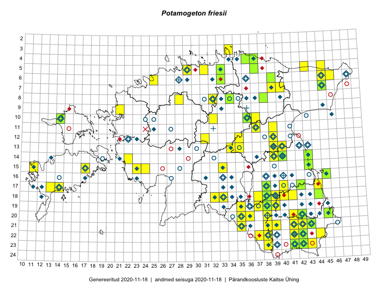

Potamogeton friesii — ogaterav penikeel
Potamogetonaceae :: Potamogeton friesii Rupr. (837); Potamogeton mucronatus Schrad. ex Sond. (4)

Kaart põhineb 841 kirjel:
vaatlusi 420
herbaareksemplare 421
Taime kaasaegsed ja ajaloolised leiukohad asuvad 162 ruudus.
Tingmärgid ja leidudega ruutude arvud periooditi uues (u) ja 2005 andmestikus (v)
| █ | vahemik | u1 | v2 |
|---|---|---|---|
| █ | 2006–2020 | 85 | – |
| ◆/◇ | 1971–2005 | 104 | 104 |
| ○ | 1921–1970 | 65 | 30 |
| + | kuni 1920 | 9 | 0 |
| × | hävinud | – | 1 |
| ? | kaheldav | – | 0 |
| Ruut | Leidja(d) | Leiuaeg | Kirje |
|---|---|---|---|
| 22-42 | Helle Mäemets, Kadi Palmik-Das | 2020-07-20 | punkt: Potamogeton friesii Rupr. |
| 22-42 | Helle Mäemets, Kadi Palmik-Das | 2020-07-20 | punkt: Potamogeton friesii Rupr. |
| 03-34 | Helle Mäemets, Kaire Torn | 2020-07-08 | punkt: Potamogeton friesii Rupr. |
| 10-14 | Helle Mäemets, Kaire Torn | 2020-07-06 | punkt: Potamogeton friesii Rupr. |
| 04-37 | Ott Luuk, Meeli Mesipuu | 2019-09-09 | TAA0152226: Potamogeton friesii Rupr. |
| 22-41 | Maili Lehtpuu | 2019-08-22 | punkt: Potamogeton friesii Rupr. |
| 05-33 | Timo Luhamäe, Peedu Saar | 2019-08-05 | TAA0149885: Potamogeton friesii Rupr. |
| 05-33 | Timo Luhamäe, Peedu Saar | 2019-08-05 | TAA0149886: Potamogeton friesii Rupr. |
| 17-38 | Peedu Saar, Ott Luuk | 2019-07-15 | TAA0149520: Potamogeton friesii Rupr. |
| 06-39 | Peedu Saar | 2018-09-03 | TAA0146871: Potamogeton friesii Rupr. |
| 06-39 | Peedu Saar | 2018-09-03 | TAA0146872: Potamogeton friesii Rupr. |
| 11-37 | Maili Lehtpuu | 2018-08-31 | punkt: Potamogeton friesii Rupr. |
| 15-23 | Helle Mäemets, Kadi Palmik | 2018-08-30 | punkt: Potamogeton friesii Rupr. |
| 10-14 | Maili Lehtpuu | 2018-08-29 | punkt: Potamogeton friesii Rupr. |
| 15-23 | Helle Mäemets, Kadi Palmik-Das | 2018-08-29 | punkt: Potamogeton friesii Rupr. |
| 11-37 | Helle Mäemets, Kadi Palmik-Das | 2018-08-12 | punkt: Potamogeton friesii Rupr. |
| 19-38 | Maili Lehtpuu | 2018-07-27 | punkt: Potamogeton friesii Rupr. |
| 22-38 | Maili Lehtpuu | 2018-07-27 | punkt: Potamogeton friesii Rupr. |
| 15-17 | Maili Lehtpuu | 2018-07-19 | punkt: Potamogeton friesii Rupr. |
| 22-42 | Toomas Kukk | 2018-07-18 | TAA0146525: Potamogeton friesii Rupr. |
| 15-11 | Maili Lehtpuu | 2018-07-18 | punkt: Potamogeton friesii Rupr. |
| 11-37 | Helle Mäemets, Kadi Palmik | 2018-07-11 | ruut/ala: Potamogeton friesii Rupr. |
| 18-38 | Helle Mäemets, Kadi Palmik-Das | 2018-07-05 | punkt: Potamogeton friesii Rupr. |
| 18-38 | Helle Mäemets, Kadi Palmik-Das | 2018-07-05 | punkt: Potamogeton friesii Rupr. |
| 18-38 | Helle Mäemets, Kadi Palmik | 2018-07-05 | punkt: Potamogeton friesii Rupr. |
| 18-38 | Helle Mäemets, Kadi Palmik | 2018-07-05 | punkt: Potamogeton friesii Rupr. |
| 10-14 | Ott Luuk, Peedu Saar | 2017-09-14 | TAA0152260: Potamogeton friesii Rupr. |
| 15-43 | Peedu Saar, Ott Luuk | 2017-08-21 | TAA0141040: Potamogeton friesii Rupr. |
| 14-43 | Ott Luuk, Peedu Saar | 2017-08-21 | TAA0142799: Potamogeton friesii Rupr. |
| 04-37 | Tõnu Feldmann, Katrit Karus | 2017-08-10 | TAA0144449: Potamogeton friesii Rupr. |
| 04-37 | Katrit Karus, Tõnu Feldmann | 2017-08-10 | ruut/ala: Potamogeton friesii Rupr. |
| 05-45 | Katrit Karus, Tõnu Feldmann | 2017-08-09 | ruut/ala: Potamogeton friesii Rupr. |
| 05-43 | Katrit Karus, Tõnu Feldmann | 2017-08-09 | ruut/ala: Potamogeton friesii Rupr. |
| 06-46 | Katrit Karus, Tõnu Feldmann | 2017-08-09 | ruut/ala: Potamogeton friesii Rupr. |
| 06-46 | Katrit Karus, Tõnu Feldmann | 2017-08-09 | ruut/ala: Potamogeton friesii Rupr. |
| 08-28 | Helle Mäemets, Kadi Palmik-Das | 2017-08-03 | punkt: Potamogeton friesii Rupr. |
| 08-28 | Helle Mäemets, Kadi Palmik | 2017-08-03 | ruut/ala: Potamogeton friesii Rupr. |
| 22-44 | Helle Mäemets, Kadi Palmik | 2017-08-01 | ruut/ala: Potamogeton friesii Rupr. |
| 17-44 | Helle Mäemets, Kadi Palmik | 2017-07-25 | punkt: Potamogeton friesii Rupr. |
| 06-33 | Peedu Saar, Ott Luuk | 2017-07-21 | TAA0141052: Potamogeton friesii Rupr. |
| 08-38 | Peedu Saar, Ott Luuk | 2017-07-18 | TAA0141057: Potamogeton friesii Rupr. |
| 12-35 | Helle Mäemets, Kadi Palmik | 2017-07-14 | ruut/ala: Potamogeton friesii Rupr. |
| 12-31 | Helle Mäemets, Kadi Palmik | 2017-07-14 | punkt: Potamogeton friesii Rupr. |
| 19-39 | Maili Lehtpuu | 2017-07-12 | punkt: Potamogeton friesii Rupr. |
| 18-37 | Helle Mäemets, Kadi Palmik | 2017-07-10 | ruut/ala: Potamogeton friesii Rupr. |
| 18-37 | Helle Mäemets, Kadi Palmik | 2017-07-10 | punkt: Potamogeton friesii Rupr. |
| 07-39 | Tõnu Feldmann, Katrit Karus | 2017-07-07 | ruut/ala: Potamogeton friesii Rupr. |
| 08-34 | Katrit Karus, Tõnu Feldmann | 2017-07-07 | ruut/ala: Potamogeton friesii Rupr. |
| 21-38 | Helle Mäemets, Kadi Palmik | 2017-07-07 | ruut/ala: Potamogeton friesii Rupr. |
| 19-37 | Helle Mäemets, Kadi Palmik | 2017-07-07 | ruut/ala: Potamogeton friesii Rupr. |
| 21-38 | Helle Mäemets, Kadi Palmik | 2017-07-07 | punkt: Potamogeton friesii Rupr. |
| 07-40 | Tõnu Feldmann, Katrit Karus | 2017-07-06 | ruut/ala: Potamogeton friesii Rupr. |
| 06-45 | Tõnu Feldmann, Katrit Karus | 2017-07-06 | ruut/ala: Potamogeton friesii Rupr. |
| 10-32 | Tõnu Feldmann, Katrit Karus | 2017-07-05 | ruut/ala: Potamogeton friesii Rupr. |
| 10-32 | Katrit Karus, Tõnu Feldmann | 2017-07-05 | ruut/ala: Potamogeton friesii Rupr. |
| 18-40 | Helle Mäemets, Kadi Palmik-Das | 2017-07-05 | punkt: Potamogeton friesii Rupr. |
| 18-40 | Helle Mäemets, Kadi Palmik | 2017-07-05 | ruut/ala: Potamogeton friesii Rupr. |
| 17-40 | Helle Mäemets, Kadi Palmik | 2017-07-05 | ruut/ala: Potamogeton friesii Rupr. |
| 11-39 | Tõnu Feldmann, Katrit Karus | 2017-07-04 | ruut/ala: Potamogeton friesii Rupr. |
| 10-37 | Tõnu Feldmann, Katrit Karus | 2017-07-04 | ruut/ala: Potamogeton friesii Rupr. |
| 10-37 | Katrit Karus, Tõnu Feldmann | 2017-07-04 | ruut/ala: Potamogeton friesii Rupr. |
| 18-33 | Helle Mäemets, Kadi Palmik | 2017-07-03 | ruut/ala: Potamogeton friesii Rupr. |
| 18-32 | Helle Mäemets, Kadi Palmik | 2017-07-03 | ruut/ala: Potamogeton friesii Rupr. |
| 18-33 | Helle Mäemets, Kadi Palmik | 2017-07-03 | punkt: Potamogeton friesii Rupr. |
| 18-32 | Helle Mäemets, Kadi Palmik | 2017-07-03 | punkt: Potamogeton friesii Rupr. |
| 21-41 | Maili Lehtpuu | 2016-08-29 | punkt: Potamogeton friesii Rupr. |
| 21-41 | Maili Lehtpuu | 2016-08-29 | punkt: Potamogeton friesii Rupr. |
| 05-37 | Tõnu Ploompuu, Eerik Leibak | 2016-07-27 | TAA0137165: Potamogeton friesii Rupr. |
| 04-36 | Meeli Mesipuu, Liina Oja | 2016-07-26 | TAA0144008: Potamogeton friesii Rupr. |
| 18-38 | Helle Mäemets, Mall Värva | 2016-07-24 | punkt: Potamogeton friesii Rupr. |
| 17-14 | Maili Lehtpuu | 2016-07-17 | punkt: Potamogeton friesii Rupr. |
| 17-13 | Helle Mäemets, Maila Moor | 2016-07-14 | punkt: Potamogeton friesii Rupr. |
| 14-39 | Maili Lehtpuu | 2016-07-04 | punkt: Potamogeton friesii Rupr. |
| 14-40 | Maili Lehtpuu | 2016-07-04 | punkt: Potamogeton friesii Rupr. |
| 12-39 | Maili Lehtpuu | 2016-07-03 | punkt: Potamogeton friesii Rupr. |
| 10-36 | Elle Rajandu, Karin Kikas | 2016-06-30 | TAA0141519: Potamogeton friesii Rupr. |
| 20-42 | Peedu Saar, Tarmo Niitla | 2016-06-16 | TAA0134019: Potamogeton friesii Rupr. |
| 17-42 | Jaak-Albert Metsoja | 2016-06-13 | TAA0133810: Potamogeton friesii Rupr. |
| 06-25 | Katrit Karus, Tõnu Feldmann | 2015-08-20 | punkt: Potamogeton friesii Rupr. |
| 15-33 | Kadi Palmik, Helle Mäemets | 2015-08-14 | ruut/ala: Potamogeton friesii Rupr. |
| 18-40 | Kadi Palmik, Helle Mäemets | 2015-08-13 | ruut/ala: Potamogeton friesii Rupr. |
| 18-41 | Kadi Palmik, Helle Mäemets | 2015-08-13 | ruut/ala: Potamogeton friesii Rupr. |
| 18-41 | Helle Mäemets, Kadi Palmik | 2015-08-13 | punkt: Potamogeton friesii Rupr. |
| 13-35 | Katrit Karus, Tõnu Feldmann | 2015-08-05 | ruut/ala: Potamogeton friesii Rupr. |
| 13-34 | Katrit Karus, Tõnu Feldmann | 2015-08-05 | ruut/ala: Potamogeton friesii Rupr. |
| 05-31 | Katrit Karus, Tõnu Feldmann | 2015-08-04 | ruut/ala: Potamogeton friesii Rupr. |
| 13-35 | Katrit Karus, Tõnu Feldmann | 2015-08-03 | ruut/ala: Potamogeton friesii Rupr. |
| 13-34 | Katrit Karus, Tõnu Feldmann | 2015-08-03 | ruut/ala: Potamogeton friesii Rupr. |
| 15-23 | Indrek Tammekänd, Irja Tammekänd | 2015-08-02 | ruut/ala: Potamogeton friesii Rupr. |
| 16-45 | Toomas Kukk, Eerik Leibak | 2015-07-29 | TAA0135669: Potamogeton friesii Rupr. |
| 16-45 | Toomas Kukk, Eerik Leibak | 2015-07-29 | TAA0135670: Potamogeton friesii Rupr. |
| 20-41 | Tõnu Feldmann, Katrit Karus | 2015-07-28 | ruut/ala: Potamogeton friesii Rupr. |
| 17-44 | Helle Mäemets, Kadi Palmik | 2015-07-27 | punkt: Potamogeton friesii Rupr. |
| 10-36 | Kadi Palmik, Helle Mäemets | 2015-07-21 | ruut/ala: Potamogeton friesii Rupr. |
| 10-36 | Helle Mäemets, Kadi Palmik | 2015-07-21 | punkt: Potamogeton friesii Rupr. |
| 10-36 | Helle Mäemets | 2015-07-21 | TAA2004565: Potamogeton friesii Rupr. |
| 11-37 | Maili Lehtpuu | 2015-07-12 | punkt: Potamogeton friesii Rupr. |
| 08-34 | Jana-Maria Habicht | 2015-06-28 | TAM0117460: Potamogeton friesii Rupr. |
| 15-24 | Indrek Tammekänd, Liisa Rennel, Agu Leivits, Hannes Pehlak, Irja Tammekänd | 2015-04-27–2015-08-02 | ruut/ala: Potamogeton friesii Rupr. |
| 15-33 | Helle Mäemets, Reet Laugaste | 2014-09-17 | punkt: Potamogeton friesii Rupr. |
| 21-41 | Maili Lehtpuu | 2014-08-15 | punkt: Potamogeton friesii Rupr. |
| 15-11 | Maili Lehtpuu | 2014-07-28 | punkt: Potamogeton friesii Rupr. |
| 20-38 | Helle Mäemets, Kadi Palmik | 2014-07-18 | punkt: Potamogeton friesii Rupr. |
| 13-40 | Maili Lehtpuu | 2014-07-07 | punkt: Potamogeton friesii Rupr. |
| 23-41 | Helle Mäemets | 2013-07-16 | TAA2004414: Potamogeton friesii Rupr. |
| 19-39 | Katrit Karus, Tõnu Feldmann | 2013-07-06 | punkt: Potamogeton friesii Rupr. |
| 21-38 | Katrit Karus, Tõnu Feldmann | 2013-07-05 | punkt: Potamogeton friesii Rupr. |
| 19-39 | Katrit Karus, Tõnu Feldmann | 2013-07-04 | punkt: Potamogeton friesii Rupr. |
| 19-38 | Katrit Karus, Tõnu Feldmann | 2013-07-03 | punkt: Potamogeton friesii Rupr. |
| 19-38 | Katrit Karus, Tõnu Feldmann | 2013-07-03 | punkt: Potamogeton friesii Rupr. |
| 19-38 | Katrit Karus, Tõnu Feldmann | 2013-07-02 | punkt: Potamogeton friesii Rupr. |
| 19-38 | Katrit Karus, Tõnu Feldmann | 2013-07-02 | punkt: Potamogeton friesii Rupr. |
| 18-39 | Katrit Karus, Tõnu Feldmann | 2013-06-20 | punkt: Potamogeton friesii Rupr. |
| 18-38 | Katrit Karus, Tõnu Feldmann | 2013-06-20 | punkt: Potamogeton friesii Rupr. |
| 18-38 | Katrit Karus, Tõnu Feldmann | 2013-06-19 | punkt: Potamogeton friesii Rupr. |
| 18-38 | Katrit Karus, Tõnu Feldmann | 2013-06-19 | punkt: Potamogeton friesii Rupr. |
| 18-39 | Katrit Karus, Tõnu Feldmann | 2013-06-19 | punkt: Potamogeton friesii Rupr. |
| 05-29 | Katrit Karus, Tõnu Feldmann | 2012-08-07 | punkt: Potamogeton friesii Rupr. |
| 09-21 | Katrit Karus, Tõnu Feldmann | 2012-08-06 | punkt: Potamogeton friesii Rupr. |
| 10-14 | Katrit Karus, Tõnu Feldmann | 2012-08-05 | punkt: Potamogeton friesii Rupr. |
| 18-38 | Helle Mäemets | 2012-08-05 | TAA2004472: Potamogeton friesii Rupr. |
| 17-14 | Katrit Karus, Tõnu Feldmann | 2012-08-04 | punkt: Potamogeton friesii Rupr. |
| 21-35 | Katrit Karus, Tõnu Feldmann | 2012-08-03 | punkt: Potamogeton friesii Rupr. |
| 23-42 | Katrit Karus, Tõnu Feldmann | 2012-07-18 | punkt: Potamogeton friesii Rupr. |
| 18-44 | Helle Mäemets, Kadi Palmik, Lilian Freiberg | 2012-07-17 | punkt: Potamogeton friesii Rupr. |
| 17-44 | Helle Mäemets, Kadi Palmik, Lilian Freiberg | 2012-07-17 | punkt: Potamogeton friesii Rupr. |
| 18-44 | Helle Mäemets | 2012-07-17 | TAA2004222: Potamogeton friesii Rupr. |
| 22-37 | Katrit Karus, Tõnu Feldmann | 2012-07-16 | punkt: Potamogeton friesii Rupr. |
| 21-38 | Katrit Karus, Tõnu Feldmann | 2012-07-16 | punkt: Potamogeton friesii Rupr. |
| 22-38 | Katrit Karus, Tõnu Feldmann | 2012-07-16 | punkt: Potamogeton friesii Rupr. |
| 20-42 | Katrit Karus, Tõnu Feldmann | 2012-07-11 | punkt: Potamogeton friesii Rupr. |
| 20-35 | Katrit Karus, Tõnu Feldmann | 2012-07-09 | punkt: Potamogeton friesii Rupr. |
| 20-36 | Katrit Karus, Tõnu Feldmann | 2012-07-09 | punkt: Potamogeton friesii Rupr. |
| 21-39 | Katrit Karus, Tõnu Feldmann | 2012-07-06 | punkt: Potamogeton friesii Rupr. |
| 18-38 | Helle Mäemets, Priit Voolaid | 2011-09-09 | punkt: Potamogeton friesii Rupr. |
| 18-38 | Helle Mäemets, Priit Voolaid | 2011-09-09 | punkt: Potamogeton friesii Rupr. |
| 06-45 | Helle Mäemets, Kadi Palmik | 2011-09-07 | punkt: Potamogeton friesii Rupr. |
| 23-42 | Helle Mäemets | 2011-09-05 | punkt: Potamogeton friesii Rupr. |
| 23-42 | Helle Mäemets | 2011-09-05 | TAA2004468: Potamogeton friesii Rupr. |
| 08-32 | Helle Mäemets, Reet Laugaste | 2011-08-31 | punkt: Potamogeton friesii Rupr. |
| 22-42 | Helle Mäemets | 2011-07-21 | punkt: Potamogeton friesii Rupr. |
| 14-22 | Katrit Karus, Tõnu Feldmann | 2011-07-20 | punkt: Potamogeton friesii Rupr. |
| 22-42 | Helle Mäemets | 2011-07-20 | punkt: Potamogeton friesii Rupr. |
| 19-39 | Katrit Karus, Tõnu Feldmann | 2011-07-11 | punkt: Potamogeton friesii Rupr. |
| 11-37 | Katrit Karus, Tõnu Feldmann | 2011-07-08 | punkt: Potamogeton friesii Rupr. |
| 14-40 | Katrit Karus, Tõnu Feldmann | 2011-07-06 | punkt: Potamogeton friesii Rupr. |
| 14-40 | Katrit Karus | 2011-07-06 | TAA2004045.A: Potamogeton friesii Rupr. |
| 19-38 | Helle Mäemets | 2011-06-30 | TAA2004618: Potamogeton friesii Rupr. |
| 12-39 | Katrit Karus, Tõnu Feldmann | 2011-06-29 | punkt: Potamogeton friesii Rupr. |
| 17-14 | Katrit Karus, Tõnu Feldmann | 2010-07-26 | punkt: Potamogeton friesii Rupr. |
| 15-23 | Gerda Ratasepp | 2010-07-21 | punkt: Potamogeton friesii Rupr. |
| 13-39 | Katrit Karus, Tõnu Feldmann | 2010-07-05 | punkt: Potamogeton friesii Rupr. |
| 17-38 | Helle Mäemets, Laura Mäemets | 2010-06-24 | punkt: Potamogeton friesii Rupr. |
| 19-38 | Katrit Karus, Tõnu Feldmann | 2010 | punkt: Potamogeton friesii Rupr. |
| 21-42 | Gerda Ratasepp, Katrit Karus, Tõnu Feldmann | 2009-07-27 | punkt: Potamogeton friesii Rupr. |
| 23-41 | Gerda Ratasepp, Katrit Karus, Tõnu Feldmann | 2009-07-27 | punkt: Potamogeton friesii Rupr. |
| 19-35 | Katrit Karus, Tõnu Feldmann | 2009-07-06 | punkt: Potamogeton friesii Rupr. |
| 23-38 | Gerda Ratasepp, Katrit Karus, Tõnu Feldmann | 2009-07-06 | punkt: Potamogeton friesii Rupr. |
| 23-43 | Gerda Ratasepp, Katrit Karus, Tõnu Feldmann | 2008-08-14 | punkt: Potamogeton friesii Rupr. |
| 21-41 | Helle Mäemets, Gerda Ratasepp, Katrit Karus, Tõnu Feldmann | 2008-08-11 | punkt: Potamogeton friesii Rupr. |
| 14-40 | Helle Mäemets | 2008-07-31 | punkt: Potamogeton friesii Rupr. |
| 17-14 | Gerda Ratasepp, Katrit Karus, Tõnu Feldmann | 2008-07-24 | punkt: Potamogeton friesii Rupr. |
| 06-25 | Gerda Ratasepp, Katrit Karus, Tõnu Feldmann | 2008-07-21 | punkt: Potamogeton friesii Rupr. |
| 05-33 | Katrit Karus, Tõnu Feldmann | 2008-07-18 | punkt: Potamogeton friesii Rupr. |
| 05-29 | Gerda Ratasepp, Katrit Karus, Tõnu Feldmann | 2008-07-16 | punkt: Potamogeton friesii Rupr. |
| 14-40 | Helle Mäemets | 2008-07-15 | TAA2003793: Potamogeton friesii Rupr. |
| 21-41 | Helle Mäemets, Gerda Ratasepp, Katrit Karus, Tõnu Feldmann | 2008-07-04 | punkt: Potamogeton friesii Rupr. |
| 21-42 | Lilian Freiberg, Kertu Ird | 2007-08-27 | punkt: Potamogeton friesii Rupr. |
| 20-45 | Helle Mäemets, Kadi Palmik | 2007-08-13 | punkt: Potamogeton friesii Rupr. |
| 20-45 | Helle Mäemets | 2007-08-13 | TAA2001735: Potamogeton friesii Rupr. |
| 13-39 | Helle Mäemets, Kertu Ird, Kai Ginter, Inga Mäemets | 2007-07-23 | punkt: Potamogeton friesii Rupr. |
| 21-43 | Helle Mäemets | 2007-07-13 | TAA2001864: Potamogeton friesii Rupr. |
| 22-41 | Lilian Freiberg, Kertu Ird | 2007-07-09 | punkt: Potamogeton friesii Rupr. |
| 07-45 | Helle Mäemets, Gerda Ratasepp, Katrit Karus, Tõnu Feldmann | 2006-07-28 | punkt: Potamogeton friesii Rupr. |
| 07-45 | Helle Mäemets | 2006-07-27 | TAA2001831: Potamogeton friesii Rupr. |
| 17-38 | Helle Mäemets, Inga Mäemets, Rainer Napits | 2006-07-20 | punkt: Potamogeton friesii Rupr. |
| 23-41 | Helle Mäemets, Kadi Palmik | 2006-07-13 | punkt: Potamogeton friesii Rupr. |
| 13-39 | Helle Mäemets, Kadi Palmik | 2006-07-07 | punkt: Potamogeton friesii Rupr. |
| 15-23 | Helle Mäemets, Kadi Palmik | 2005-07-25–2005-07-26 | punkt: Potamogeton friesii Rupr. |
| 15-23 | Helle Mäemets | 2005-07-25 | TAA2002220: Potamogeton friesii Rupr. |
| 14-39 | Helle Mäemets, Kadi Palmik | 2005-07-20–2005-07-21 | punkt: Potamogeton friesii Rupr. |
| 18-38 | Helle Mäemets | 2005-07-11 | punkt: Potamogeton friesii Rupr. |
| 17-38 | Helle Mäemets | 2005-07-11 | punkt: Potamogeton friesii Rupr. |
| 22-38 | Helle Mäemets, Lilian Freiberg | 2005-07-06 | punkt: Potamogeton friesii Rupr. |
| 17-11 | Helle Mäemets | 2004-08-10 | TAA2002224: Potamogeton friesii Rupr. |
| 11-37 | Helle Mäemets, Kadi Palmik | 2004-08-04 | punkt: Potamogeton friesii Rupr. |
| 11-37 | Helle Mäemets | 2004-07-25 | TAA2002233: Potamogeton friesii Rupr. |
| 16-34 | Helle Mäemets, Kadi Palmik | 2004-07-19 | punkt: Potamogeton friesii Rupr. |
| 18-34 | Helle Mäemets, Kadi Palmik | 2004-07-19 | punkt: Potamogeton friesii Rupr. |
| 16-34 | Helle Mäemets | 2004-07-19 | TAA2002321: Potamogeton friesii Rupr. |
| 18-38 | Helle Mäemets, Bjarne Moeslund | 2003-08-08 | punkt: Potamogeton friesii Rupr. |
| 18-38 | Helle Mäemets | 2003-08-08 | TAA2002214.B: Potamogeton friesii Rupr. |
| 18-38 | Helle Mäemets, Bjarne Moeslund | 2003-08-07 | punkt: Potamogeton friesii Rupr. |
| 12-39 | Helle Mäemets | 2003-08-05 | punkt: Potamogeton friesii Rupr. |
| 14-21 | Helle Mäemets | 2003-07-28 | punkt: Potamogeton friesii Rupr. |
| 17-14 | Helle Mäemets | 2003-07-22 | punkt: Potamogeton friesii Rupr. |
| 17-14 | Helle Mäemets | 2003-07-22 | TAA2002005: Potamogeton friesii Rupr. |
| 17-11 | Helle Mäemets | 2003-07-21 | punkt: Potamogeton friesii Rupr. |
| 15-11 | Helle Mäemets | 2003-07-20 | punkt: Potamogeton friesii Rupr. |
| 10-14 | Helle Mäemets | 2003-07-19 | punkt: Potamogeton friesii Rupr. |
| 10-14 | Helle Mäemets | 2003-07-19 | TAA2002013: Potamogeton friesii Rupr. |
| 21-42 | Helle Mäemets, Laura Mäemets | 2003-07-02 | punkt: Potamogeton friesii Rupr. |
| 23-42 | Helle Mäemets | 2003-07-02 | punkt: Potamogeton friesii Rupr. |
| 15-17 | Helle Mäemets | 2002-08-21 | punkt: Potamogeton friesii Rupr. |
| 17-38 | Helle Mäemets, Reet Laugaste | 2002-07-24 | punkt: Potamogeton friesii Rupr. |
| 21-42 | Helle Mäemets, Aimar Rakko | 2002-07-11 | punkt: Potamogeton friesii Rupr. |
| 18-38 | Helle Mäemets, Lilian Freiberg | 2002-06-17 | punkt: Potamogeton friesii Rupr. |
| 18-38 | Helle Mäemets, Lilian Freiberg | 2002-06-17 | punkt: Potamogeton friesii Rupr. |
| 18-38 | Helle Mäemets | 2002-06-17 | punkt: Potamogeton friesii Rupr. |
| 20-45 | Helle Mäemets, Lilian Freiberg | 2001-08 | ruut/ala: Potamogeton friesii Rupr. |
| 23-39 | Lilian Freiberg | 2001-07-31 | punkt: Potamogeton friesii Rupr. |
| 16-45 | Helle Mäemets | 2001-07-29 | TAA2003014: Potamogeton friesii Rupr. |
| 16-45 | Helle Mäemets | 2001-07-28–2001-07-29 | ruut/ala: Potamogeton friesii Rupr. |
| 17-38 | Helle Mäemets, Lilian Freiberg | 2001-07-23 | punkt: Potamogeton friesii Rupr. |
| 22-38 | Helle Mäemets, Lilian Freiberg | 2001-07-20 | punkt: Potamogeton friesii Rupr. |
| 22-39 | Helle Mäemets, Lilian Freiberg | 2001-07-06 | punkt: Potamogeton friesii Rupr. |
| 22-39 | Helle Mäemets, Lilian Freiberg | 2001-07-06 | punkt: Potamogeton friesii Rupr. |
| 22-39 | Helle Mäemets, Lilian Freiberg | 2001-07-05 | punkt: Potamogeton friesii Rupr. |
| 18-38 | Helle Mäemets, Reet Laugaste, Ülle Reier | 2001-06-18 | punkt: Potamogeton friesii Rupr. |
| 18-38 | Helle Mäemets | 2001-06-18 | TAA2003054: Potamogeton friesii Rupr. |
| 18-38 | Helle Mäemets | 2001-06-18 | TAA2003055: Potamogeton friesii Rupr. |
| 23-38 | Lilian Freiberg | 2001 | punkt: Potamogeton friesii Rupr. |
| 10-46 | Helle Mäemets | 2000-07-24 | TAA2001968: Potamogeton friesii Rupr. |
| 10-46 | Helle Mäemets | 2000-07-24 | TAA2001972.B: Potamogeton friesii Rupr. |
| 09-45 | Helle Mäemets | 2000-07-24 | TAA2001974.A: Potamogeton friesii Rupr. |
| 12-23 | Tõnu Ploompuu | 2000-07-10–2000-07-15 | ruut/ala: Potamogeton friesii Rupr. |
| 22-38 | Helle Mäemets | 2000-07-06 | punkt: Potamogeton friesii Rupr. |
| 17-38 | Helle Mäemets, Lilian Freiberg | 2000-06-26 | punkt: Potamogeton friesii Rupr. |
| 22-38 | Helle Mäemets, Lilian Freiberg | 2000-06-19 | punkt: Potamogeton friesii Rupr. |
| 17-38 | Helle Mäemets, Lilian Freiberg | 1999-08-02 | punkt: Potamogeton friesii Rupr. |
| 17-38 | Helle Mäemets, Lilian Freiberg | 1999-07-30 | punkt: Potamogeton friesii Rupr. |
| 15-43 | Helle Mäemets, Anu Albert | 1998-08-10 | punkt: Potamogeton friesii Rupr. |
| 13-43 | Helle Mäemets, Anu Albert | 1998-08-10 | punkt: Potamogeton friesii Rupr. |
| 13-42 | Helle Mäemets | 1998-08-10 | TAA2000822: Potamogeton friesii Rupr. |
| 16-17 | Toomas Kukk | 1998-07-24 | TAA0109960: Potamogeton friesii Rupr. |
| 20-42 | Helle Mäemets | 1998-07-23 | punkt: Potamogeton friesii Rupr. |
| 17-38 | Helle Mäemets, Reet Laugaste, Markku Viljanen | 1998-07-22 | punkt: Potamogeton friesii Rupr. |
| 17-38 | Helle Mäemets | 1998-07-22 | punkt: Potamogeton friesii Rupr. |
| 13-34 | Helle Mäemets | 1998-07-18 | TAA2002604: Potamogeton friesii Rupr. |
| 19-39 | Helle Mäemets | 1998-07-05 | punkt: Potamogeton friesii Rupr. |
| 08-40 | Tõnu Ploompuu | 1998 | ruut/ala: Potamogeton friesii Rupr. |
| 16-39 | Tiiu Trei | 1997-08-20 | TAA0118397: Potamogeton friesii Rupr. |
| 12-39 | Helle Mäemets, Reet Laugaste | 1997-08-19 | punkt: Potamogeton friesii Rupr. |
| 11-37 | Helle Mäemets | 1996-07-22 | TAA2002600: Potamogeton friesii Rupr. |
| 11-37 | Helle Mäemets | 1996-07-22 | TAA2002605: Potamogeton friesii Rupr. |
| 13-39 | Helle Mäemets | 1996 | punkt: Potamogeton friesii Rupr. |
| 15-23 | Aime Mäemets | 1995-07-25 | TAA2001989.A: Potamogeton friesii Rupr. |
| 22-42 | Aime Mäemets | 1994-08-09 | punkt: Potamogeton friesii Rupr. |
| 22-42 | Aime Mäemets | 1994-08-09 | TAA2003063: Potamogeton friesii Rupr. |
| 14-37 | T. Trei | 1994-07-28 | TAA0109895: Potamogeton friesii Rupr. |
| 14-37 | T. Trei | 1994-07-28 | TAA0109896: Potamogeton friesii Rupr. |
| 17-12 | Tiiu Trei | 1994-07-07 | TAA0118399: Potamogeton friesii Rupr. |
| 17-12 | Tiiu Trei | 1994-07-07 | TAA0118398: Potamogeton friesii Rupr. |
| 16-33 | Tiiu Trei | 1994-06-27 | TAA0118400: Potamogeton friesii Rupr. |
| 16-33 | T. Trei | 1994-06-27 | TAA0109893: Potamogeton friesii Rupr. |
| 16-33 | T. Trei | 1994-06-27 | TAA0109894: Potamogeton friesii Rupr. |
| 22-39 | Aime Mäemets | 1993-08-17 | punkt: Potamogeton friesii Rupr. |
| 22-39 | Aime Mäemets | 1993-08-17 | TAA2002461: Potamogeton friesii Rupr. |
| 22-39 | Aime Mäemets | 1993-08-16 | punkt: Potamogeton friesii Rupr. |
| 05-29 | Toomas Kukk | 1992-08-04 | TAA0110691: Potamogeton friesii Rupr. |
| 05-29 | Toomas Kukk | 1992-08-04 | TAA0110692: Potamogeton friesii Rupr. |
| 16-40 | T. Trei | 1991-08-13 | TAA0109897: Potamogeton friesii Rupr. |
| 22-41 | Aime Mäemets | 1991-07-24 | punkt: Potamogeton friesii Rupr. |
| 22-41 | Aime Mäemets | 1991-07-23 | punkt: Potamogeton friesii Rupr. |
| 22-41 | Aime Mäemets | 1991-07-23 | TAA2002193: Potamogeton friesii Rupr. |
| 21-36 | T. Trei | 1991-07-19 | TAA0109891: Potamogeton friesii Rupr. |
| 21-36 | T. Trei | 1991-07-19 | TAA0109892: Potamogeton friesii Rupr. |
| 18-39 | Aime Mäemets | 1991-07-17–1991-07-29 | punkt: Potamogeton friesii Rupr. |
| 18-39 | Aime Mäemets | 1991-07-17 | TAA2002177: Potamogeton friesii Rupr. |
| 18-38 | Aime Mäemets | 1991-07-16 | punkt: Potamogeton friesii Rupr. |
| 14-13 | Aime Mäemets | 1991-07-09 | punkt: Potamogeton friesii Rupr. |
| 17-38 | Aime Mäemets | 1991-07-03 | punkt: Potamogeton friesii Rupr. |
| 17-38 | Aime Mäemets | 1991-07-03 | TAA2002471: Potamogeton friesii Rupr. |
| 17-38 | Aime Mäemets | 1991-07-02 | punkt: Potamogeton friesii Rupr. |
| 17-38 | Aime Mäemets | 1991-07-02 | TAA2002453.B: Potamogeton friesii Rupr. |
| 23-42 | Aime Mäemets | 1990-08-04 | punkt: Potamogeton friesii Rupr. |
| 23-42 | Aime Mäemets | 1990-08-04 | TAA2002758: Potamogeton friesii Rupr. |
| 23-42 | Aime Mäemets | 1990-07-26 | punkt: Potamogeton friesii Rupr. |
| 23-42 | Aime Mäemets | 1990-07-26 | TAA2002744: Potamogeton friesii Rupr. |
| 23-42 | Aime Mäemets | 1990-07-19 | TAA2002734: Potamogeton friesii Rupr. |
| 23-42 | Aime Mäemets | 1990-07-18 | punkt: Potamogeton friesii Rupr. |
| 19-39 | Aime Mäemets | 1990-06-26 | punkt: Potamogeton friesii Rupr. |
| 06-29 | Aime Mäemets | 1990-06-21 | punkt: Potamogeton friesii Rupr. |
| 06-28 | Aime Mäemets | 1990-06-21 | punkt: Potamogeton friesii Rupr. |
| 06-28 | Aime Mäemets | 1990-06-21 | TAA2002717: Potamogeton friesii Rupr. |
| 06-29 | Aime Mäemets | 1990-06-21 | TAA2002719: Potamogeton friesii Rupr. |
| 06-32 | Aime Mäemets | 1990-06-20 | punkt: Potamogeton friesii Rupr. |
| 06-32 | Aare Mäemets | 1990-06-20 | TAA2002358: Potamogeton friesii Rupr. |
| 06-32 | Aare Mäemets | 1990-06-20 | TAA2002726: Potamogeton friesii Rupr. |
| 06-32 | Aime Mäemets | 1990-06-19 | punkt: Potamogeton friesii Rupr. |
| 06-32 | Aime Mäemets | 1990-06-18 | TAA2002006: Potamogeton friesii Rupr. |
| 06-32 | Aime Mäemets | 1990-06-18 | TAA2002724: Potamogeton friesii Rupr. |
| 21-43 | Aime Mäemets | 1989-08-04 | TAA2003079: Potamogeton friesii Rupr. |
| 16-33 | Aime Mäemets | 1989-07-25 | punkt: Potamogeton friesii Rupr. |
| 22-38 | Aime Mäemets | 1989-07-17 | punkt: Potamogeton friesii Rupr. |
| 21-41 | Aime Mäemets | 1989-07-13 | punkt: Potamogeton friesii Rupr. |
| 21-42 | Aime Mäemets | 1989-07-07 | punkt: Potamogeton friesii Rupr. |
| 21-43 | Aime Mäemets | 1989-07-04 | punkt: Potamogeton friesii Rupr. |
| 21-42 | Aime Mäemets | 1989-07-03 | punkt: Potamogeton friesii Rupr. |
| 21-42 | Aime Mäemets | 1989-07-03 | punkt: Potamogeton friesii Rupr. |
| 21-42 | Aime Mäemets | 1989-07-03 | TAA2003045: Potamogeton friesii Rupr. |
| 21-42 | Aime Mäemets | 1989-07-03 | TAA2003082: Potamogeton friesii Rupr. |
| 20-43 | T. Trei | 1989-06-20 | TAA0109889: Potamogeton friesii Rupr. |
| 21-41 | T. Trei | 1989-06-19 | TAA0109842: Potamogeton friesii Rupr. |
| 17-38 | Aime Mäemets | 1988-08-09 | punkt: Potamogeton friesii Rupr. |
| 17-38 | Aime Mäemets | 1988-08-09 | punkt: Potamogeton friesii Rupr. |
| 14-39 | Aime Mäemets | 1988-08-03 | TAA2001935.A: Potamogeton friesii Rupr. |
| 14-40 | Aime Mäemets | 1988-07-29 | punkt: Potamogeton friesii Rupr. |
| 14-40 | Aime Mäemets | 1988-07-29 | TAA2001934.A: Potamogeton friesii Rupr. |
| 14-40 | Aime Mäemets | 1988-07-28 | punkt: Potamogeton friesii Rupr. |
| 14-40 | Aime Mäemets | 1988-07-28 | TAA2001943.A: Potamogeton friesii Rupr. |
| 13-40 | Aime Mäemets | 1988-07-27 | punkt: Potamogeton friesii Rupr. |
| 13-40 | Aime Mäemets | 1988-07-27 | TAA2003023: Potamogeton friesii Rupr. |
| 13-39 | Aime Mäemets | 1988-07-20 | punkt: Potamogeton friesii Rupr. |
| 11-37 | Aime Mäemets | 1988-07-11 | punkt: Potamogeton friesii Rupr. |
| 11-37 | Aime Mäemets | 1988-07-10 | punkt: Potamogeton friesii Rupr. |
| 11-37 | Aime Mäemets | 1988-07-10 | TAA2003028: Potamogeton friesii Rupr. |
| 08-36 | Aime Mäemets | 1988-07-09 | TAA2004252: Potamogeton friesii Rupr. |
| 08-37 | Aime Mäemets | 1988-07-02 | punkt: Potamogeton friesii Rupr. |
| 06-36 | Aime Mäemets | 1988-06-30 | punkt: Potamogeton friesii Rupr. |
| 06-36 | Aime Mäemets | 1988-06-30 | TAA2003027: Potamogeton friesii Rupr. |
| 06-36 | Aime Mäemets | 1988-06-29 | punkt: Potamogeton friesii Rupr. |
| 06-36 | Aime Mäemets | 1988-06-29 | TAA2002075: Potamogeton friesii Rupr. |
| 08-36 | Aime Mäemets | 1988-05-25 | punkt: Potamogeton friesii Rupr. |
| 12-22 | T. Trei | 1988 | TAA0109890: Potamogeton friesii Rupr. |
| 19-38 | Aime Mäemets | 1987-08-05 | punkt: Potamogeton friesii Rupr. |
| 19-38 | Aime Mäemets | 1987-08-03 | punkt: Potamogeton friesii Rupr. |
| 23-42 | Aime Mäemets | 1987-07-29 | punkt: Potamogeton friesii Rupr. |
| 16-38 | Ülo Niinemets | 1987-07-12 | TAA0109664: Potamogeton friesii Rupr. |
| 07-45 | S. Pallo | 1987-07-08 | punkt: Potamogeton friesii Rupr. |
| 06-45 | Aime Mäemets | 1987-07-08 | punkt: Potamogeton friesii Rupr. |
| 19-38 | Aime Mäemets | 1987-07-03 | TAA2002488: Potamogeton friesii Rupr. |
| 07-45 | E. Reisenbuk | 1987 | punkt: Potamogeton friesii Rupr. |
| 07-45 | E. Reisenbuk | 1987 | punkt: Potamogeton friesii Rupr. |
| 07-45 | Aime Mäemets, A. Jõgeva, E. Reisenbuk | 1987 | punkt: Potamogeton friesii Rupr. |
| 18-33 | Aime Mäemets | 1986-08-21 | punkt: Potamogeton friesii Rupr. |
| 18-33 | Aime Mäemets | 1986-08-21 | TAA2002436: Potamogeton friesii Rupr. |
| 18-33 | Aime Mäemets | 1986-08-21 | TAA2002439: Potamogeton friesii Rupr. |
| 14-43 | Aime Mäemets | 1986-07-10 | punkt: Potamogeton friesii Rupr. |
| 14-43 | Aime Mäemets | 1986-07-10 | TAA2003059.B: Potamogeton friesii Rupr. |
| 19-36 | Aime Mäemets | 1986-07-01 | TAA2002578.B: Potamogeton friesii Rupr. |
| 07-45 | unknown | 1986 | punkt: Potamogeton friesii Rupr. |
| 07-45 | Vilma Kuusk | 1985-09-16 | ruut/ala: Potamogeton friesii Rupr. |
| 20-42 | Aime Mäemets | 1985-07-31 | punkt: Potamogeton friesii Rupr. |
| 20-42 | Aime Mäemets | 1985-07-31 | TAA2000952: Potamogeton friesii Rupr. |
| 20-42 | Aime Mäemets | 1985-07-31 | TAA2002736: Potamogeton friesii Rupr. |
| 17-38 | Aime Mäemets | 1985-07-29 | punkt: Potamogeton friesii Rupr. |
| 17-38 | Aime Mäemets | 1985-07-29 | TAA2002720: Potamogeton friesii Rupr. |
| 10-36 | Aime Mäemets | 1985-07-05 | TAA2002750: Potamogeton friesii Rupr. |
| 19-45 | Ülo Niinemets | 1985–1986 | ruut/ala: Potamogeton friesii Rupr. |
| 06-45 | A. Teder | 1985 | punkt: Potamogeton friesii Rupr. |
| 21-39 | Aime Mäemets | 1984-07-29 | TAA2002763.B: Potamogeton friesii Rupr. |
| 18-38 | Aime Mäemets | 1984-07-22 | punkt: Potamogeton friesii Rupr. |
| 18-38 | Aime Mäemets | 1984-07-22 | punkt: Potamogeton friesii Rupr. |
| 18-38 | Aime Mäemets | 1984-07-22 | TAA2002484: Potamogeton friesii Rupr. |
| 21-39 | Aime Mäemets | 1984-07-20 | TAA2002425: Potamogeton friesii Rupr. |
| 18-39 | Aime Mäemets | 1984-07-19 | punkt: Potamogeton friesii Rupr. |
| 18-39 | Aime Mäemets | 1984-07-19 | TAA2002483: Potamogeton friesii Rupr. |
| 18-39 | Aime Mäemets | 1984-07-19 | TAA2003829: Potamogeton friesii Rupr. |
| 19-38 | Aime Mäemets | 1984-07-17 | TAA2002187: Potamogeton friesii Rupr. |
| 21-38 | Aime Mäemets | 1984-07-09 | TAA2003550: Potamogeton friesii Rupr. |
| 21-38 | Aime Mäemets | 1984-07-08 | punkt: Potamogeton friesii Rupr. |
| 21-38 | Aime Mäemets | 1984-07-08 | TAA2002762: Potamogeton friesii Rupr. |
| 21-39 | Aime Mäemets | 1984-07-07 | TAA2002766.B: Potamogeton friesii Rupr. |
| 21-39 | Aime Mäemets | 1984-07-06 | punkt: Potamogeton friesii Rupr. |
| 21-39 | Aime Mäemets | 1984-07-04 | TAA2002428: Potamogeton friesii Rupr. |
| 17-39 | Aime Mäemets | 1984-07-03 | punkt: Potamogeton friesii Rupr. |
| 17-39 | Aime Mäemets | 1984-07-03 | TAA2002431: Potamogeton friesii Rupr. |
| 17-38 | Aime Mäemets | 1984-07-02 | punkt: Potamogeton friesii Rupr. |
| 17-38 | Aime Mäemets | 1984-07-02 | punkt: Potamogeton friesii Rupr. |
| 17-38 | Aime Mäemets | 1984-07-02 | TAA2002424: Potamogeton friesii Rupr. |
| 17-38 | Aime Mäemets | 1984-07-02 | TAA2002460: Potamogeton friesii Rupr. |
| 21-39 | Aime Mäemets | 1984-06-29 | punkt: Potamogeton friesii Rupr. |
| 13-28 | Aime Mäemets | 1983-07-15 | TAA2000669: Potamogeton friesii Rupr. |
| 08-32 | Aime Mäemets | 1983-07-13 | punkt: Potamogeton friesii Rupr. |
| 08-32 | Aime Mäemets | 1983-07-13 | TAA2000780: Potamogeton friesii Rupr. |
| 21-42 | Aime Mäemets | 1983-07-04 | punkt: Potamogeton friesii Rupr. |
| 21-42 | Aime Mäemets | 1983-07-04 | TAA2000787: Potamogeton friesii Rupr. |
| 22-42 | Aime Mäemets | 1983-06-30 | punkt: Potamogeton friesii Rupr. |
| 20-39 | Aime Mäemets | 1982-07-31 | TAA2002370: Potamogeton friesii Rupr. |
| 18-38 | Aime Mäemets | 1982-07-27 | punkt: Potamogeton friesii Rupr. |
| 18-39 | Aime Mäemets | 1982-07-27 | punkt: Potamogeton friesii Rupr. |
| 18-38 | Aime Mäemets | 1982-07-27 | TAA2000738: Potamogeton friesii Rupr. |
| 18-39 | Aime Mäemets | 1982-07-27 | TAA2000744: Potamogeton friesii Rupr. |
| 18-39 | Aime Mäemets | 1982-07-27 | TAA2000763: Potamogeton friesii Rupr. |
| 16-38 | Aime Mäemets | 1982-07-22 | TAA2001716: Potamogeton friesii Rupr. |
| 17-38 | Aime Mäemets | 1982-07-21 | TAA2001743: Potamogeton friesii Rupr. |
| 17-38 | Aime Mäemets | 1982-07-21 | TAA2001744: Potamogeton friesii Rupr. |
| 17-38 | Aime Mäemets | 1982-07-21 | TAA2001769: Potamogeton friesii Rupr. |
| 14-39 | Aime Mäemets | 1982-07-18 | punkt: Potamogeton friesii Rupr. |
| 14-39 | Aime Mäemets | 1982-07-18 | TAA2000674: Potamogeton friesii Rupr. |
| 14-43 | Aime Mäemets | 1982-07-16 | punkt: Potamogeton friesii Rupr. |
| 14-43 | Aime Mäemets | 1982-07-16 | TAA2000758: Potamogeton friesii Rupr. |
| 13-39 | Aime Mäemets | 1982-07-14 | punkt: Potamogeton friesii Rupr. |
| 13-39 | Aime Mäemets | 1982-07-14 | TAA2000684.A: Potamogeton friesii Rupr. |
| 14-39 | Aime Mäemets | 1982-07-13 | punkt: Potamogeton friesii Rupr. |
| 14-39 | Aime Mäemets | 1982-07-13 | TAA2001740: Potamogeton friesii Rupr. |
| 13-39 | Aime Mäemets | 1982-07-10 | punkt: Potamogeton friesii Rupr. |
| 13-39 | Aime Mäemets | 1982-07-10 | TAA2000721: Potamogeton friesii Rupr. |
| 13-40 | Aime Mäemets | 1982-07-09 | punkt: Potamogeton friesii Rupr. |
| 14-40 | Aime Mäemets | 1982-07-08 | punkt: Potamogeton friesii Rupr. |
| 14-40 | Aime Mäemets | 1982-07-08 | TAA2000698: Potamogeton friesii Rupr. |
| 14-40 | Aime Mäemets | 1982-07-08 | TAA2000753: Potamogeton friesii Rupr. |
| 12-39 | Aime Mäemets | 1982-07-07 | TAA2001755: Potamogeton friesii Rupr. |
| 12-39 | Aime Mäemets | 1982-07-06 | punkt: Potamogeton friesii Rupr. |
| 12-39 | Aime Mäemets | 1982-07-06 | TAA2001738.A: Potamogeton friesii Rupr. |
| 11-37 | Aime Mäemets | 1982-07-02 | punkt: Potamogeton friesii Rupr. |
| 12-39 | Aime Mäemets | 1982-07-02 | TAA2001741: Potamogeton friesii Rupr. |
| 12-39 | Aime Mäemets | 1982-07-01 | punkt: Potamogeton friesii Rupr. |
| 12-39 | Aime Mäemets | 1982-07-01 | TAA2000701: Potamogeton friesii Rupr. |
| 12-39 | Aime Mäemets | 1982-07-01 | TAA2000705: Potamogeton friesii Rupr. |
| 13-39 | Aime Mäemets | 1982-06-30 | punkt: Potamogeton friesii Rupr. |
| 13-39 | Aime Mäemets | 1982-06-30 | TAA2000703: Potamogeton friesii Rupr. |
| 17-38 | Aime Mäemets | 1982 | punkt: Potamogeton friesii Rupr. |
| 19-38 | Aime Mäemets | 1981-08-20 | TAA2002057: Potamogeton friesii Rupr. |
| 21-35 | Aime Mäemets | 1981-07-16 | punkt: Potamogeton friesii Rupr. |
| 21-35 | Aime Mäemets | 1981-07-15 | TAA2002512: Potamogeton friesii Rupr. |
| 19-39 | Aime Mäemets | 1981-07-09 | punkt: Potamogeton friesii Rupr. |
| 21-42 | Aime Mäemets | 1981-07-07 | punkt: Potamogeton friesii Rupr. |
| 21-42 | Aime Mäemets | 1981-07-07 | TAA2002503: Potamogeton friesii Rupr. |
| 22-42 | Aime Mäemets | 1981-07-02 | TAA2002520: Potamogeton friesii Rupr. |
| 20-43 | Aime Mäemets | 1981-06-30 | punkt: Potamogeton friesii Rupr. |
| 22-41 | botaaniline ekspeditsioon ZBI | 1981-06 | ruut/ala: Potamogeton friesii Rupr. |
| 06-45 | Aime Mäemets | 1980-07-12 | punkt: Potamogeton friesii Rupr. |
| 06-45 | Aime Mäemets | 1980-07-12 | TAA2002059: Potamogeton friesii Rupr. |
| 21-42 | Aime Mäemets | 1980-07-10 | punkt: Potamogeton friesii Rupr. |
| 23-42 | Taavi Tuulik | 1980-07-08 | punkt: Potamogeton friesii Rupr. |
| 22-42 | Taavi Tuulik | 1980-07-08 | TAA2002576: Potamogeton friesii Rupr. |
| 22-42 | Aime Mäemets | 1980-07-08 | punkt: Potamogeton friesii Rupr. |
| 05-29 | Aime Mäemets | 1980-07-08 | TAA2002309: Potamogeton friesii Rupr. |
| 05-29 | Aime Mäemets | 1980-07-07 | punkt: Potamogeton friesii Rupr. |
| 22-42 | Taavi Tuulik | 1980-07-05 | TAA2002398: Potamogeton friesii Rupr. |
| 22-42 | Aime Mäemets | 1980-07-05 | punkt: Potamogeton friesii Rupr. |
| 23-42 | Taavi Tuulik | 1980-07-04 | TAA2002030.B: Potamogeton friesii Rupr. |
| 23-42 | Taavi Tuulik | 1980-07-04 | TAA2002039: Potamogeton friesii Rupr. |
| 23-42 | Aime Mäemets | 1980-07-04 | punkt: Potamogeton friesii Rupr. |
| 23-42 | Aime Mäemets | 1980-07-03 | punkt: Potamogeton friesii Rupr. |
| 23-42 | Taavi Tuulik | 1980-07-02 | TAA2002131: Potamogeton friesii Rupr. |
| 23-42 | Taavi Tuulik | 1980-07-02 | TAA2003559: Potamogeton friesii Rupr. |
| 23-42 | Aime Mäemets | 1980-07-02 | punkt: Potamogeton friesii Rupr. |
| 23-42 | Aime Mäemets | 1980-07-02 | punkt: Potamogeton friesii Rupr. |
| 23-42 | Taavi Tuulik | 1980-07-01 | TAA2002392: Potamogeton friesii Rupr. |
| 23-42 | Aime Mäemets | 1980-07-01 | punkt: Potamogeton friesii Rupr. |
| 23-42 | Taavi Tuulik | 1980-06-30 | TAA2002388.A: Potamogeton friesii Rupr. |
| 23-42 | Aime Mäemets | 1980-06-30 | punkt: Potamogeton friesii Rupr. |
| 23-42 | Taavi Tuulik | 1980-06-26 | TAA2002021: Potamogeton friesii Rupr. |
| 19-39 | Taavi Tuulik | 1980-06-14 | TAA2002351.B: Potamogeton friesii Rupr. |
| 10-14 | Taavi Tuulik | 1980–2000 | ruut/ala: Potamogeton friesii Rupr. |
| 07-39 | Aime Mäemets | 1979-09-25 | TAA2000544: Potamogeton friesii Rupr. |
| 07-39 | Aime Mäemets | 1979-09-25 | TAA2000545: Potamogeton friesii Rupr. |
| 07-39 | Aime Mäemets | 1979-09-25 | TAA2000546: Potamogeton friesii Rupr. |
| 18-32 | Aime Mäemets | 1979-07-27 | TAA2000515: Potamogeton friesii Rupr. |
| 17-33 | Aime Mäemets | 1979-07-23 | punkt: Potamogeton friesii Rupr. |
| 17-33 | Aime Mäemets | 1979-07-22 | punkt: Potamogeton friesii Rupr. |
| 17-33 | Aime Mäemets | 1979-07-22 | TAA2000657: Potamogeton friesii Rupr. |
| 16-33 | Aime Mäemets | 1979-07-17 | punkt: Potamogeton friesii Rupr. |
| 16-33 | Aime Mäemets | 1979-07-17 | TAA2002463: Potamogeton friesii Rupr. |
| 16-33 | Aime Mäemets | 1979-07-17 | TAA2002464: Potamogeton friesii Rupr. |
| 16-33 | Aime Mäemets | 1979-07-15 | TAA2002465: Potamogeton friesii Rupr. |
| 16-33 | Aime Mäemets | 1979-07-13 | punkt: Potamogeton friesii Rupr. |
| 16-34 | Aime Mäemets | 1979-07-13 | punkt: Potamogeton friesii Rupr. |
| 16-34 | Aime Mäemets | 1979-07-13 | TAA2000594.A: Potamogeton friesii Rupr. |
| 16-33 | Aime Mäemets | 1979-07-13 | TAA2002467: Potamogeton friesii Rupr. |
| 23-42 | Aime Mäemets | 1979-07-08 | TAA2000973: Potamogeton friesii Rupr. |
| 21-42 | Linda Viljasoo, Maret Kask, A. Frey | 1979-05-21–1979-08-30 | ruut/ala: Potamogeton friesii Rupr. |
| 18-12 | Aime Mäemets | 1978-07-28 | punkt: Potamogeton friesii Rupr. |
| 18-12 | Aime Mäemets | 1978-07-28 | TAA2001002: Potamogeton friesii Rupr. |
| 15-17 | Aime Mäemets | 1978-07-25 | punkt: Potamogeton friesii Rupr. |
| 15-17 | Aime Mäemets | 1978-07-25 | TAA2001005: Potamogeton friesii Rupr. |
| 21-41 | Aime Mäemets | 1978-07-05 | punkt: Potamogeton friesii Rupr. |
| 21-41 | Aime Mäemets | 1978-07-05 | TAA2003069: Potamogeton friesii Rupr. |
| 21-42 | Aime Mäemets | 1978-07-03 | TAA2002314: Potamogeton friesii Rupr. |
| 18-42 | Maret Kask, Linda Viljasoo | 1978–1979 | ruut/ala: Potamogeton friesii Rupr. |
| 04-34 | Aime Mäemets | 1977-08-15 | TAA2001698: Potamogeton friesii Rupr. |
| 04-34 | Aime Mäemets | 1977-08-15 | TAA2001707: Potamogeton friesii Rupr. |
| 04-35 | Aime Mäemets | 1977-08-14 | TAA2001705: Potamogeton friesii Rupr. |
| 05-33 | Aime Mäemets | 1977-08-13 | punkt: Potamogeton friesii Rupr. |
| 05-33 | Aime Mäemets | 1977-08-13 | TAA2001700: Potamogeton friesii Rupr. |
| 17-38 | Aime Mäemets | 1977-08-05 | punkt: Potamogeton friesii Rupr. |
| 17-38 | Aime Mäemets | 1977-08-05 | TAA2002331: Potamogeton friesii Rupr. |
| 19-38 | Aime Mäemets | 1977-08-01 | punkt: Potamogeton friesii Rupr. |
| 19-39 | Aime Mäemets | 1977-07-28 | punkt: Potamogeton friesii Rupr. |
| 19-39 | Aime Mäemets | 1977-07-28 | TAA2002348.B: Potamogeton friesii Rupr. |
| 18-43 | Aime Mäemets | 1977-07-26 | punkt: Potamogeton friesii Rupr. |
| 21-42 | Aime Mäemets | 1977-07-23 | punkt: Potamogeton friesii Rupr. |
| 22-41 | Aime Mäemets | 1977-07-23 | punkt: Potamogeton friesii Rupr. |
| 22-41 | Aime Mäemets | 1977-07-23 | TAA2002332: Potamogeton friesii Rupr. |
| 22-41 | Aime Mäemets | 1977-07-22 | punkt: Potamogeton friesii Rupr. |
| 22-41 | Aime Mäemets | 1977-07-21 | TAA2002334: Potamogeton friesii Rupr. |
| 22-41 | Aime Mäemets | 1977-07-20 | punkt: Potamogeton friesii Rupr. |
| 16-23 | Aime Mäemets | 1977-07-08 | punkt: Potamogeton friesii Rupr. |
| 16-23 | Aime Mäemets | 1977-07-08 | TAA2004096: Potamogeton friesii Rupr. |
| 17-38 | Aime Mäemets | 1977-07-05 | punkt: Potamogeton friesii Rupr. |
| 16-38 | A. Toomel | 1977 | ruut/ala: Potamogeton friesii Rupr. |
| 19-39 | Aime Mäemets | 1976-07-24 | punkt: Potamogeton friesii Rupr. |
| 19-39 | Aime Mäemets | 1976-07-23 | punkt: Potamogeton friesii Rupr. |
| 22-38 | Aime Mäemets | 1976-07-08 | punkt: Potamogeton friesii Rupr. |
| 22-38 | Aime Mäemets | 1976-06-26 | punkt: Potamogeton friesii Rupr. |
| 22-38 | Aime Mäemets | 1976-06-25 | punkt: Potamogeton friesii Rupr. |
| 14-40 | Aime Mäemets | 1975-08-20 | TAA0109850: Potamogeton friesii Rupr. |
| 14-40 | Aime Mäemets | 1975-08-19 | TAA2000884: Potamogeton friesii Rupr. |
| 04-37 | Linda Viljasoo | 1975-08-08 | TAA0109833: Potamogeton friesii Rupr. |
| 18-35 | Aime Mäemets | 1975-07-15 | punkt: Potamogeton friesii Rupr. |
| 21-41 | Aime Mäemets | 1975-07-05 | punkt: Potamogeton friesii Rupr. |
| 11-25 | Aime Mäemets | 1975-06-26 | TAA2000882: Potamogeton friesii Rupr. |
| 16-34 | Aime Mäemets | 1975-06-25 | TAA2000880: Potamogeton friesii Rupr. |
| 16-31 | Aime Mäemets | 1975-06-25 | TAA2000881: Potamogeton friesii Rupr. |
| 06-48 | Aime Mäemets | 1975-06-23 | TAA0109851: Potamogeton friesii Rupr. |
| 06-48 | Aime Mäemets | 1975-06-23 | TAA0109852: Potamogeton friesii Rupr. |
| 06-48 | Aime Mäemets | 1975-06-23 | TAA2000883: Potamogeton friesii Rupr. |
| 22-42 | Aime Mäemets | 1975-06-20 | punkt: Potamogeton friesii Rupr. |
| 21-41 | Aime Mäemets | 1975-06-05 | TAA2002077.A: Potamogeton friesii Rupr. |
| 18-39 | Aime Mäemets | 1974-08-07 | TAA0109948: Potamogeton friesii Rupr. |
| 18-39 | Aime Mäemets | 1974-08-07 | TAA2000873: Potamogeton friesii Rupr. |
| 04-37 | Rein Sander | 1974-07-25 | TAA0109946: Potamogeton friesii Rupr. |
| 21-35 | Aime Mäemets | 1974-07-19 | TAA0109846: Potamogeton friesii Rupr. |
| 21-35 | Aime Mäemets | 1974-07-19 | TAA2000868: Potamogeton friesii Rupr. |
| 20-35 | Aime Mäemets | 1974-07-18 | punkt: Potamogeton friesii Rupr. |
| 20-35 | Aime Mäemets | 1974-07-18 | TAA2000871.A: Potamogeton friesii Rupr. |
| 21-35 | Aime Mäemets | 1974-07-18 | TAA2004684: Potamogeton friesii Rupr. |
| 20-35 | Merike Mäemets | 1974-07-17 | TAA2000867: Potamogeton friesii Rupr. |
| 20-35 | Aime Mäemets | 1974-07-17 | punkt: Potamogeton friesii Rupr. |
| 20-36 | Aime Mäemets | 1974-07-17 | punkt: Potamogeton friesii Rupr. |
| 20-36 | Aime Mäemets | 1974-07-17 | TAA0109847: Potamogeton friesii Rupr. |
| 20-36 | Aime Mäemets | 1974-07-17 | TAA2000863: Potamogeton friesii Rupr. |
| 22-38 | Aime Mäemets | 1974-07-14 | punkt: Potamogeton friesii Rupr. |
| 22-38 | Aime Mäemets | 1974-07-14 | TAA2002054: Potamogeton friesii Rupr. |
| 22-38 | Aime Mäemets | 1974-07-12 | punkt: Potamogeton friesii Rupr. |
| 22-38 | Aime Mäemets | 1974-07-12 | TAA2000869: Potamogeton friesii Rupr. |
| 19-43 | Aime Mäemets | 1974-07-11 | TAA0109945: Potamogeton friesii Rupr. |
| 19-42 | Aime Mäemets | 1974-07-11 | TAA2000870: Potamogeton friesii Rupr. |
| 23-41 | Aime Mäemets | 1974-07-05 | punkt: Potamogeton friesii Rupr. |
| 23-41 | Aime Mäemets | 1974-07-05 | TAA0109845: Potamogeton friesii Rupr. |
| 22-41 | Aime Mäemets | 1974-07-05 | TAA2000862: Potamogeton friesii Rupr. |
| 23-41 | Aime Mäemets | 1974-07-05 | TAA2000872: Potamogeton friesii Rupr. |
| 20-35 | Aare Mäemets | 1974-06-25 | TAA2002014: Potamogeton friesii Rupr. |
| 04-34 | 1974–1976 | ruut/ala: Potamogeton friesii Rupr. | |
| 18-33 | Aime Mäemets | 1973-08-10 | punkt: Potamogeton friesii Rupr. |
| 21-35 | Aime Mäemets | 1973-08-10 | punkt: Potamogeton friesii Rupr. |
| 19-35 | Aime Mäemets | 1973-08-10 | punkt: Potamogeton friesii Rupr. |
| 19-33 | Aime Mäemets | 1973-08-10 | TAA0109947: Potamogeton friesii Rupr. |
| 19-33 | Aime Mäemets | 1973-08-10 | TAA2000858: Potamogeton friesii Rupr. |
| 19-35 | Aime Mäemets | 1973-08-10 | TAA2000859: Potamogeton friesii Rupr. |
| 20-38 | Aime Mäemets | 1973-07-27 | TAA2000861: Potamogeton friesii Rupr. |
| 20-38 | Aime Mäemets | 1973-07-27 | TAA2000879: Potamogeton friesii Rupr. |
| 23-42 | Aime Mäemets | 1973-07-21 | punkt: Potamogeton friesii Rupr. |
| 23-42 | Aime Mäemets | 1973-07-21 | TAA2000860: Potamogeton friesii Rupr. |
| 23-42 | Aime Mäemets | 1973-07-17 | punkt: Potamogeton friesii Rupr. |
| 18-39 | Aime Mäemets | 1973-07-09 | punkt: Potamogeton friesii Rupr. |
| 21-42 | Aime Mäemets | 1973-07-09 | punkt: Potamogeton friesii Rupr. |
| 19-38 | Aime Mäemets | 1973-07-09 | punkt: Potamogeton friesii Rupr. |
| 21-42 | Aime Mäemets | 1973-07-09 | punkt: Potamogeton friesii Rupr. |
| 17-38 | Aime Mäemets | 1973-07 | punkt: Potamogeton friesii Rupr. |
| 22-41 | Aime Mäemets | 1972-07-31 | TAA2000887: Potamogeton friesii Rupr. |
| 22-41 | Aime Mäemets | 1972-07-30 | punkt: Potamogeton friesii Rupr. |
| 22-41 | Aime Mäemets | 1972-07-30 | TAA2000898: Potamogeton friesii Rupr. |
| 22-41 | Aime Mäemets | 1972-07-29 | punkt: Potamogeton friesii Rupr. |
| 22-41 | Aime Mäemets | 1972-07-29 | TAA2000899: Potamogeton friesii Rupr. |
| 22-39 | Aime Mäemets | 1972-07-28 | punkt: Potamogeton friesii Rupr. |
| 22-39 | Aime Mäemets | 1972-07-28 | punkt: Potamogeton friesii Rupr. |
| 17-34 | Aime Mäemets | 1972-07-28 | punkt: Potamogeton friesii Rupr. |
| 22-39 | Aime Mäemets | 1972-07-28 | TAA2000886: Potamogeton friesii Rupr. |
| 16-34 | Aime Mäemets | 1972-07-27 | punkt: Potamogeton friesii Rupr. |
| 16-34 | Aime Mäemets | 1972-07-27 | punkt: Potamogeton friesii Rupr. |
| 17-34 | Aime Mäemets | 1972-07-27 | TAA0109843: Potamogeton friesii Rupr. |
| 16-34 | Aime Mäemets | 1972-07-27 | TAA2000888: Potamogeton friesii Rupr. |
| 16-34 | Aime Mäemets | 1972-07-27 | TAA2000889: Potamogeton friesii Rupr. |
| 17-34 | Aime Mäemets | 1972-07-27 | TAA2000892: Potamogeton friesii Rupr. |
| 15-33 | Aime Mäemets | 1972-07-26 | punkt: Potamogeton friesii Rupr. |
| 15-33 | Aime Mäemets | 1972-07-26 | punkt: Potamogeton friesii Rupr. |
| 15-33 | Aime Mäemets | 1972-07-26 | TAA0109844: Potamogeton friesii Rupr. |
| 15-33 | Aime Mäemets | 1972-07-26 | TAA0109909: Potamogeton friesii Rupr. |
| 15-33 | Aime Mäemets | 1972-07-26 | TAA2000890: Potamogeton friesii Rupr. |
| 15-33 | Aime Mäemets | 1972-07-26 | TAA2000891: Potamogeton friesii Rupr. |
| 15-33 | Aime Mäemets | 1972-07-26 | TAA2000900: Potamogeton friesii Rupr. |
| 19-39 | Aime Mäemets | 1972-07-23 | punkt: Potamogeton friesii Rupr. |
| 19-38 | Aime Mäemets | 1972-07-23 | TAA2000901: Potamogeton friesii Rupr. |
| 19-39 | Aime Mäemets | 1972-07-23 | TAA2000903: Potamogeton friesii Rupr. |
| 20-39 | Aime Mäemets | 1972-07-22 | punkt: Potamogeton friesii Rupr. |
| 19-40 | Aime Mäemets | 1972-07-22 | punkt: Potamogeton friesii Rupr. |
| 20-40 | Aime Mäemets | 1972-07-22 | TAA2000893: Potamogeton friesii Rupr. |
| 20-38 | Aime Mäemets | 1972-07-20 | punkt: Potamogeton friesii Rupr. |
| 20-38 | Aime Mäemets | 1972-07-20 | TAA0109853: Potamogeton friesii Rupr. |
| 20-38 | Aime Mäemets | 1972-07-20 | TAA0109900: Potamogeton friesii Rupr. |
| 20-38 | Aime Mäemets | 1972-07-20 | TAA2000894: Potamogeton friesii Rupr. |
| 19-38 | Aime Mäemets | 1972-07-20 | TAA2000897: Potamogeton friesii Rupr. |
| 18-38 | Aime Mäemets | 1972-07-19 | punkt: Potamogeton friesii Rupr. |
| 18-38 | Aime Mäemets | 1972-07-19 | punkt: Potamogeton friesii Rupr. |
| 18-38 | Aime Mäemets | 1972-07-19 | punkt: Potamogeton friesii Rupr. |
| 18-38 | Aime Mäemets | 1972-07-19 | TAA0109961: Potamogeton friesii Rupr. |
| 18-38 | Aime Mäemets | 1972-07-19 | TAA2000895: Potamogeton friesii Rupr. |
| 18-38 | Aime Mäemets | 1972-07-19 | TAA2000896: Potamogeton friesii Rupr. |
| 18-39 | Aime Mäemets | 1972-07-14 | punkt: Potamogeton friesii Rupr. |
| 18-39 | Aime Mäemets | 1972-07-14 | TAA2000902.A: Potamogeton friesii Rupr. |
| 14-40 | Aime Mäemets | 1972-07-13 | punkt: Potamogeton friesii Rupr. |
| 14-40 | Aime Mäemets | 1972-07-13 | TAA0109854: Potamogeton friesii Rupr. |
| 14-40 | Aime Mäemets | 1972-07-13 | TAA2000904: Potamogeton friesii Rupr. |
| 14-39 | Aime Mäemets | 1972-07-12 | punkt: Potamogeton friesii Rupr. |
| 08-33 | Aime Mäemets | 1972-07-08 | TAA0109907: Potamogeton friesii Rupr. |
| 09-33 | Aime Mäemets | 1972-07-08 | TAA2000857: Potamogeton friesii Rupr. |
| 08-37 | Aime Mäemets | 1972-07-07 | punkt: Potamogeton friesii Rupr. |
| 08-37 | Aime Mäemets | 1972-07-07 | TAA0109908: Potamogeton friesii Rupr. |
| 08-37 | Aime Mäemets | 1972-06-17 | TAA2000885: Potamogeton friesii Rupr. |
| 20-44 | Aime Mäemets | 1971-07-25 | punkt: Potamogeton friesii Rupr. |
| 16-41 | Aime Mäemets | 1971-07-25 | punkt: Potamogeton friesii Rupr. |
| 16-41 | Aime Mäemets | 1971-07-25 | TAA2000954: Potamogeton friesii Rupr. |
| 20-44 | Aime Mäemets | 1971-07-25 | TAA2000955: Potamogeton friesii Rupr. |
| 22-42 | Aime Mäemets | 1971-07-23 | punkt: Potamogeton friesii Rupr. |
| 22-42 | Aime Mäemets | 1971-07-23 | punkt: Potamogeton friesii Rupr. |
| 22-42 | Aime Mäemets | 1971-07-23 | punkt: Potamogeton friesii Rupr. |
| 21-42 | Aime Mäemets | 1971-07-23 | punkt: Potamogeton friesii Rupr. |
| 21-42 | Aime Mäemets | 1971-07-23 | TAA0109848: Potamogeton friesii Rupr. |
| 22-42 | Aime Mäemets | 1971-07-23 | TAA0109943: Potamogeton friesii Rupr. |
| 22-42 | Aime Mäemets | 1971-07-23 | TAA2000960: Potamogeton friesii Rupr. |
| 22-42 | Aime Mäemets | 1971-07-23 | TAA2000961: Potamogeton friesii Rupr. |
| 21-42 | Aime Mäemets | 1971-07-23 | TAA2000962: Potamogeton friesii Rupr. |
| 22-42 | Aime Mäemets | 1971-07-23 | TAA2000963: Potamogeton friesii Rupr. |
| 22-42 | Aime Mäemets | 1971-07-22 | punkt: Potamogeton friesii Rupr. |
| 22-42 | Aime Mäemets | 1971-07-22 | TAA2000953: Potamogeton friesii Rupr. |
| 23-42 | Aime Mäemets | 1971-07-21 | punkt: Potamogeton friesii Rupr. |
| 23-42 | Aime Mäemets | 1971-07-21 | punkt: Potamogeton friesii Rupr. |
| 23-42 | Aime Mäemets | 1971-07-21 | punkt: Potamogeton friesii Rupr. |
| 23-42 | Aime Mäemets | 1971-07-21 | TAA0109849: Potamogeton friesii Rupr. |
| 23-42 | Aime Mäemets | 1971-07-21 | TAA0109898: Potamogeton friesii Rupr. |
| 23-42 | Aime Mäemets | 1971-07-21 | TAA2000958: Potamogeton friesii Rupr. |
| 23-42 | Aime Mäemets | 1971-07-21 | TAA2000959: Potamogeton friesii Rupr. |
| 10-43 | Aime Mäemets | 1970-07-17 | TAA2000514: Potamogeton friesii Rupr. |
| 11-41 | Aime Mäemets | 1970-07-16 | TAA2000479: Potamogeton friesii Rupr. |
| 11-41 | Aime Mäemets | 1970-07-16 | TAA2000487: Potamogeton friesii Rupr. |
| 12-41 | Aime Mäemets | 1970-07-15 | TAA2000513: Potamogeton friesii Rupr. |
| 05-29 | Aime Mäemets | 1970-07-11 | punkt: Potamogeton friesii Rupr. |
| 05-29 | Aime Mäemets | 1970-07-11 | TAA2000877: Potamogeton friesii Rupr. |
| 21-41 | Aime Mäemets | 1970-07-09 | TAA0109904: Potamogeton friesii Rupr. |
| 21-41 | Aime Mäemets | 1970-07-09 | TAA2000874: Potamogeton friesii Rupr. |
| 21-42 | Aime Mäemets | 1970-07-08 | punkt: Potamogeton friesii Rupr. |
| 23-41 | Aime Mäemets | 1970-07-08 | punkt: Potamogeton friesii Rupr. |
| 23-42 | Aime Mäemets | 1970-07-08 | TAA0109881: Potamogeton friesii Rupr. |
| 23-42 | Aime Mäemets | 1970-07-08 | TAA0109882: Potamogeton friesii Rupr. |
| 23-42 | Aime Mäemets | 1970-07-08 | TAA0109906: Potamogeton friesii Rupr. |
| 23-41 | Aime Mäemets | 1970-07-08 | TAA0109941: Potamogeton friesii Rupr. |
| 21-42 | Aime Mäemets | 1970-07-08 | TAA2000876: Potamogeton friesii Rupr. |
| 23-41 | Aime Mäemets | 1970-07-08 | TAA2000878: Potamogeton friesii Rupr. |
| 18-33 | Aime Mäemets | 1970-06-29 | TAA0109905: Potamogeton friesii Rupr. |
| 18-33 | Aime Mäemets | 1970-06-29 | TAA2000972: Potamogeton friesii Rupr. |
| 20-34 | Aime Mäemets | 1970-06-28 | TAA2000864: Potamogeton friesii Rupr. |
| 20-34 | Aime Mäemets | 1970-06-28 | TAA2000866: Potamogeton friesii Rupr. |
| 20-34 | Aime Mäemets | 1970-06-26 | TAA2000865: Potamogeton friesii Rupr. |
| 19-37 | Aime Mäemets | 1969-06-22 | TAA0109903: Potamogeton friesii Rupr. |
| 19-36 | Aime Mäemets | 1969-06-22 | TAA2000875: Potamogeton friesii Rupr. |
| 18-33 | Aime Mäemets | 1968-08-28 | TAA0109885: Potamogeton friesii Rupr. |
| 18-33 | Aime Mäemets | 1968-08-28 | TAA0109886: Potamogeton friesii Rupr. |
| 18-33 | Aime Mäemets | 1968-08-28 | TAA0109913: Potamogeton friesii Rupr. |
| 18-33 | Aime Mäemets | 1968-08-28 | TAA0109914: Potamogeton friesii Rupr. |
| 18-33 | Aime Mäemets | 1968-08-28 | TAA0109915: Potamogeton friesii Rupr. |
| 18-33 | Aime Mäemets | 1968-08-28 | TAA0109916: Potamogeton friesii Rupr. |
| 18-33 | Aime Mäemets | 1968-08-28 | TAA2000913: Potamogeton friesii Rupr. |
| 18-33 | Aime Mäemets | 1968-08-28 | TAA2000914: Potamogeton friesii Rupr. |
| 18-33 | Aime Mäemets | 1968-08-28 | TAA2000956: Potamogeton friesii Rupr. |
| 19-36 | Aime Mäemets | 1968-08-26 | TAA2000944: Potamogeton friesii Rupr. |
| 19-39 | Aime Mäemets | 1968-08-22 | TAA2000919: Potamogeton friesii Rupr. |
| 18-39 | Aime Mäemets | 1968-08-21 | TAA0109855: Potamogeton friesii Rupr. |
| 18-39 | Aime Mäemets | 1968-08-21 | TAA0109857: Potamogeton friesii Rupr. |
| 18-39 | Aime Mäemets | 1968-08-21 | TAA2000943: Potamogeton friesii Rupr. |
| 18-39 | Aime Mäemets | 1968-08-21 | TAA2000945: Potamogeton friesii Rupr. |
| 18-39 | Aare Mäemets | 1968-08-21 | TAA2000915: Potamogeton friesii Rupr. |
| 15-39 | Aare Mäemets | 1968-08-21 | TAA2000946: Potamogeton friesii Rupr. |
| 13-39 | Aime Mäemets | 1968-08-20 | punkt: Potamogeton friesii Rupr. |
| 14-39 | Aime Mäemets | 1968-08-20 | punkt: Potamogeton friesii Rupr. |
| 14-40 | Aime Mäemets | 1968-08-20 | punkt: Potamogeton friesii Rupr. |
| 12-39 | Aime Mäemets | 1968-08-20 | punkt: Potamogeton friesii Rupr. |
| 13-40 | Aime Mäemets | 1968-08-20 | TAA0109858: Potamogeton friesii Rupr. |
| 12-39 | Aime Mäemets | 1968-08-20 | TAA0109864: Potamogeton friesii Rupr. |
| 12-39 | Aime Mäemets | 1968-08-20 | TAA0109865: Potamogeton friesii Rupr. |
| 14-40 | Aime Mäemets | 1968-08-20 | TAA0109867: Potamogeton friesii Rupr. |
| 13-39 | Aime Mäemets | 1968-08-20 | TAA0109872: Potamogeton friesii Rupr. |
| 12-38 | Aime Mäemets | 1968-08-20 | TAA0109876: Potamogeton friesii Rupr. |
| 12-39 | Aime Mäemets | 1968-08-20 | TAA0109888: Potamogeton friesii Rupr. |
| 13-39 | Aime Mäemets | 1968-08-20 | TAA0109899: Potamogeton friesii Rupr. |
| 12-39 | Aime Mäemets | 1968-08-20 | TAA2000926: Potamogeton friesii Rupr. |
| 13-39 | Aime Mäemets | 1968-08-20 | TAA2000927: Potamogeton friesii Rupr. |
| 14-39 | Aime Mäemets | 1968-08-20 | TAA2000934: Potamogeton friesii Rupr. |
| 13-39 | Aime Mäemets | 1968-08-20 | TAA2000936: Potamogeton friesii Rupr. |
| 14-40 | Aime Mäemets | 1968-08-20 | TAA2000937: Potamogeton friesii Rupr. |
| 12-38 | Aime Mäemets | 1968-08-20 | TAA2000939: Potamogeton friesii Rupr. |
| 13-40 | Aime Mäemets | 1968-08-20 | TAA2000947: Potamogeton friesii Rupr. |
| 11-37 | Aime Mäemets | 1968-08-19 | TAA0109856: Potamogeton friesii Rupr. |
| 13-35 | Aime Mäemets | 1968-08-19 | TAA0109902: Potamogeton friesii Rupr. |
| 13-35 | Aime Mäemets | 1968-08-19 | TAA0109951: Potamogeton friesii Rupr. |
| 13-35 | Aime Mäemets | 1968-08-19 | TAA0109952: Potamogeton friesii Rupr. |
| 13-35 | Aime Mäemets | 1968-08-19 | TAA0109953: Potamogeton friesii Rupr. |
| 13-35 | Aime Mäemets | 1968-08-19 | TAA2000935: Potamogeton friesii Rupr. |
| 11-37 | Aime Mäemets | 1968-08-19 | TAA2000957: Potamogeton friesii Rupr. |
| 21-41 | Aime Mäemets | 1968-08-10 | TAA0109954: Potamogeton friesii Rupr. |
| 21-41 | Aime Mäemets | 1968-08-10 | TAA0109955: Potamogeton friesii Rupr. |
| 21-41 | Aime Mäemets | 1968-08-10 | TAA0109957: Potamogeton friesii Rupr. |
| 21-42 | Aime Mäemets | 1968-08-10 | TAA0109958: Potamogeton friesii Rupr. |
| 21-42 | Aime Mäemets | 1968-08-10 | TAA0109959: Potamogeton friesii Rupr. |
| 21-42 | Aime Mäemets | 1968-08-10 | TAA2000920: Potamogeton friesii Rupr. |
| 21-42 | Aime Mäemets | 1968-08-10 | TAA2000922: Potamogeton friesii Rupr. |
| 21-41 | Aime Mäemets | 1968-08-10 | TAA2000933: Potamogeton friesii Rupr. |
| 19-39 | Aime Mäemets | 1968-08-08 | TAA2000923: Potamogeton friesii Rupr. |
| 19-39 | Aime Mäemets | 1968-08-08 | TAA2000924: Potamogeton friesii Rupr. |
| 19-38 | Aime Mäemets | 1968-08-08 | TAA2000925: Potamogeton friesii Rupr. |
| 15-28 | Aime Mäemets | 1968-08-07 | TAA0109910: Potamogeton friesii Rupr. |
| 13-30 | Aime Mäemets | 1968-08-02 | TAA0109875: Potamogeton friesii Rupr. |
| 16-27 | Aime Mäemets | 1968-08-02 | TAA0109911: Potamogeton friesii Rupr. |
| 14-32 | Aime Mäemets | 1968-08-02 | TAA0109912: Potamogeton friesii Rupr. |
| 16-27 | Aime Mäemets | 1968-08-02 | TAA2000905: Potamogeton friesii Rupr. |
| 13-30 | Aime Mäemets | 1968-08-02 | TAA2000906: Potamogeton friesii Rupr. |
| 14-32 | Aime Mäemets | 1968-08-02 | TAA2000907: Potamogeton friesii Rupr. |
| 15-28 | Aime Mäemets | 1968-08-02 | TAA2000928: Potamogeton friesii Rupr. |
| 15-17 | Aime Mäemets | 1968-08-01 | punkt: Potamogeton friesii Rupr. |
| 15-17 | Aime Mäemets | 1968-08-01 | TAA0109861: Potamogeton friesii Rupr. |
| 15-17 | Aime Mäemets | 1968-08-01 | TAA0109862: Potamogeton friesii Rupr. |
| 15-17 | Aime Mäemets | 1968-08-01 | TAA0109884: Potamogeton friesii Rupr. |
| 15-17 | Aime Mäemets | 1968-08-01 | TAA2000910: Potamogeton friesii Rupr. |
| 16-14 | Aime Mäemets | 1968-07-29 | punkt: Potamogeton friesii Rupr. |
| 16-14 | Aime Mäemets | 1968-07-29 | TAA0109873: Potamogeton friesii Rupr. |
| 16-14 | Aime Mäemets | 1968-07-29 | TAA0109874: Potamogeton friesii Rupr. |
| 16-14 | Aime Mäemets | 1968-07-29 | TAA0109887: Potamogeton friesii Rupr. |
| 16-14 | Aime Mäemets | 1968-07-29 | TAA2000929: Potamogeton friesii Rupr. |
| 17-14 | Aime Mäemets | 1968-07-28 | TAA0109949: Potamogeton friesii Rupr. |
| 17-14 | Aime Mäemets | 1968-07-28 | TAA0109950: Potamogeton friesii Rupr. |
| 17-14 | Aime Mäemets | 1968-07-28 | TAA2000948: Potamogeton friesii Rupr. |
| 08-34 | Aime Mäemets | 1968-07-23 | TAA0109920: Potamogeton friesii Rupr. |
| 08-34 | Aime Mäemets | 1968-07-23 | TAA2000921: Potamogeton friesii Rupr. |
| 07-45 | Aime Mäemets | 1968-07-21 | TAA0109917: Potamogeton friesii Rupr. |
| 07-45 | Aime Mäemets | 1968-07-21 | TAA0109918: Potamogeton friesii Rupr. |
| 07-45 | Aime Mäemets | 1968-07-21 | TAA2000942: Potamogeton friesii Rupr. |
| 07-45 | Aime Mäemets | 1968-07-20 | punkt: Potamogeton friesii Rupr. |
| 07-45 | Aime Mäemets | 1968-07-20 | TAA0109956: Potamogeton friesii Rupr. |
| 07-45 | Aime Mäemets | 1968-07-20 | TAA2000916: Potamogeton friesii Rupr. |
| 07-45 | Aime Mäemets | 1968-07-20 | TAA2003510: Potamogeton friesii Rupr. |
| 06-45 | Silvia Talts | 1968-07-19 | TAA0109939: Potamogeton friesii Rupr. |
| 07-45 | Aime Mäemets | 1968-07-19 | punkt: Potamogeton friesii Rupr. |
| 07-45 | Aime Mäemets | 1968-07-19 | punkt: Potamogeton friesii Rupr. |
| 06-45 | Aime Mäemets | 1968-07-19 | punkt: Potamogeton friesii Rupr. |
| 07-45 | Aime Mäemets | 1968-07-19 | punkt: Potamogeton friesii Rupr. |
| 06-48 | Vilma Kuusk | 1968-07-18 | TAA0109877: Potamogeton friesii Rupr. |
| 22-38 | Aime Mäemets | 1968-07-17 | TAA2000912: Potamogeton friesii Rupr. |
| 22-38 | Aime Mäemets | 1968-07-17 | TAA2000931.A: Potamogeton friesii Rupr. |
| 22-41 | Aime Mäemets | 1968-07-16 | TAA0109859: Potamogeton friesii Rupr. |
| 22-41 | Aime Mäemets | 1968-07-16 | TAA0109860: Potamogeton friesii Rupr. |
| 23-42 | Aime Mäemets | 1968-07-16 | TAA0109883: Potamogeton friesii Rupr. |
| 22-41 | Aime Mäemets | 1968-07-16 | TAA0109901: Potamogeton friesii Rupr. |
| 23-39 | Aime Mäemets | 1968-07-16 | TAA2000909: Potamogeton friesii Rupr. |
| 23-42 | Aime Mäemets | 1968-07-16 | TAA2000911: Potamogeton friesii Rupr. |
| 23-41 | Aime Mäemets | 1968-07-16 | TAA2000930: Potamogeton friesii Rupr. |
| 23-41 | Aime Mäemets | 1968-07-16 | TAA2000932: Potamogeton friesii Rupr. |
| 22-41 | Aime Mäemets | 1968-07-16 | TAA2000949: Potamogeton friesii Rupr. |
| 22-42 | Aime Mäemets | 1968-07-15 | punkt: Potamogeton friesii Rupr. |
| 22-42 | Aime Mäemets | 1968-07-15 | TAA0109944: Potamogeton friesii Rupr. |
| 22-42 | Aime Mäemets | 1968-07-15 | TAA2000938: Potamogeton friesii Rupr. |
| 22-42 | Aime Mäemets | 1968-07-15 | TAA2003509: Potamogeton friesii Rupr. |
| 08-31 | Aime Mäemets | 1966-06-30 | punkt: Potamogeton friesii Rupr. |
| 23-42 | Aime Mäemets | 1964-08-06 | punkt: Potamogeton friesii Rupr. |
| 13-43 | Agnes Ojaveer | 1964-07-31 | TAA0109868: Potamogeton friesii Rupr. |
| 06-36 | Aime Mäemets | 1962-08-21 | TAA2000950: Potamogeton friesii Rupr. |
| 06-36 | Aime Mäemets | 1962-08-18 | punkt: Potamogeton friesii Rupr. |
| 22-38 | Aime Mäemets | 1961-08-28 | punkt: Potamogeton friesii Rupr. |
| 22-39 | Aime Mäemets | 1961-08-24 | punkt: Potamogeton friesii Rupr. |
| 20-35 | Aime Mäemets | 1961-08-22 | punkt: Potamogeton friesii Rupr. |
| 20-42 | Aime Mäemets | 1961-08-16 | TAA0109942: Potamogeton friesii Rupr. |
| 22-38 | Aime Mäemets | 1961-08-15 | TAA2000951: Potamogeton friesii Rupr. |
| 20-42 | Aime Mäemets | 1961-08-10 | punkt: Potamogeton friesii Rupr. |
| 20-42 | Aime Mäemets | 1961-08-10 | TAA2000372.B: Potamogeton friesii Rupr. |
| 20-42 | Aime Mäemets | 1961-08-06 | punkt: Potamogeton friesii Rupr. |
| 11-37 | M. Kask | 1960-07-26 | TAA0109938: Potamogeton friesii Rupr. |
| 19-39 | M. Kask | 1960-06-23 | TAA0109866: Potamogeton friesii Rupr. |
| 16-14 | Heljo Tuvikene | 1958-07-16 | punkt: Potamogeton friesii Rupr. |
| 23-39 | Linda Viljasoo, A. Saare | 1957-08-10 | TAA0109936: Potamogeton friesii Rupr. |
| 23-39 | Linda Viljasoo, A. Saare | 1957-08-10 | TAA0109937: Potamogeton friesii Rupr. |
| 21-41 | E. Reimal | 1957-07-21 | TAA0109935: Potamogeton friesii Rupr. |
| 21-42 | Heljo Tuvikene | 1957-07-18 | punkt: Potamogeton friesii Rupr. |
| 21-43 | Heljo Tuvikene | 1957-07-18 | punkt: Potamogeton friesii Rupr. |
| 21-43 | E. Reimal | 1957-07-18 | TAA0109934: Potamogeton friesii Rupr. |
| 13-40 | E. Reimal | 1957-07-01 | TAA0109869: Potamogeton friesii Rupr. |
| 13-40 | E. Reimal | 1957-07-01 | TAA0109933: Potamogeton friesii Rupr. |
| 13-42 | Heljo Tuvikene | 1957-06-24 | punkt: Potamogeton friesii Rupr. |
| 21-41 | Linda Viljasoo | 1957-06-16 | TAA0109932: Potamogeton friesii Rupr. |
| 10-14 | Haidla | 1956-08-03 | TAA0109931: Potamogeton friesii Rupr. |
| 15-17 | Heljo Tuvikene | 1956-07-21–1958-07-12 | punkt: Potamogeton friesii Rupr. |
| 15-17 | H. Haidla | 1956-07-21 | TAA0109930: Potamogeton friesii Rupr. |
| 21-41 | T. Timm | 1955-08-07 | TAA0109863: Potamogeton friesii Rupr. |
| 21-35 | Heljo Tuvikene | 1955-07-10 | punkt: Potamogeton friesii Rupr. |
| 22-41 | H. Tuvikene | 1955-06-30 | TAA0109929: Potamogeton friesii Rupr. |
| 22-41 | Heljo Tuvikene | 1955 | punkt: Potamogeton friesii Rupr. |
| 17-41 | Heljo Tuvikene | 1954-07-31 | punkt: Potamogeton friesii Rupr. |
| 07-45 | Heljo Tuvikene | 1954-07-27 | punkt: Potamogeton friesii Rupr. |
| 07-45 | Heljo Tuvikene | 1954-07-26 | punkt: Potamogeton friesii Rupr. |
| 07-45 | H. Tuvikene | 1954-07-26 | TAA0109928: Potamogeton friesii Rupr. |
| 07-45 | H. Tuvikene | 1954-07-26 | TAA0109940: Potamogeton friesii Rupr. |
| 07-45 | Heljo Tuvikene | 1954-07-24 | punkt: Potamogeton friesii Rupr. |
| 10-36 | Heljo Tuvikene | 1954-07-20 | punkt: Potamogeton friesii Rupr. |
| 10-36 | H. Tuvikene | 1954-07-20 | TAA0109878: Potamogeton friesii Rupr. |
| 10-36 | H. Tuvikene | 1954-07-20 | TAA0109879: Potamogeton friesii Rupr. |
| 10-36 | H. Tuvikene | 1954-07-20 | TAA0109880: Potamogeton friesii Rupr. |
| 18-39 | Heljo Tuvikene | 1954-07-13 | punkt: Potamogeton friesii Rupr. |
| 19-39 | Heljo Tuvikene | 1954-07-04 | punkt: Potamogeton friesii Rupr. |
| 18-38 | Heljo Tuvikene | 1954 | punkt: Potamogeton friesii Rupr. |
| 16-43 | järvede kompleksekspeditsioon | 1952-08-17 | punkt: Potamogeton friesii Rupr. |
| 16-33 | järvede kompleksekspeditsioon | 1952-08-07 | punkt: Potamogeton friesii Rupr. |
| 22-42 | järvede kompleksekspeditsioon | 1952-06-25 | punkt: Potamogeton friesii Rupr. |
| 17-38 | Heljo Tuvikene | 1951-08-09 | punkt: Potamogeton friesii Rupr. |
| 16-38 | järvede kompleksekspeditsioon | 1951-08-07 | punkt: Potamogeton friesii Rupr. |
| 13-40 | Heljo Tuvikene | 1951-07-16 | punkt: Potamogeton friesii Rupr. |
| 08-32 | Robert Voore, Peet Kaaret | 1943 | punkt: Potamogeton friesii Rupr. |
| 13-30 | Peet Kaaret | 1936-07-18 | TAA0109923: Potamogeton friesii Rupr. |
| 13-30 | Peet Kaaret | 1936-07-18 | TAA0109924: Potamogeton friesii Rupr. |
| 13-30 | Peet Kaaret | 1936-07-18 | TAA0109925: Potamogeton friesii Rupr. |
| 13-30 | Peet Kaaret | 1936-07-18 | TAA0109926: Potamogeton friesii Rupr. |
| 13-30 | Peet Kaaret | 1936-07-18 | TAA0109927: Potamogeton friesii Rupr. |
| 08-35 | J. Talts, S. Talts | 1935–1936 | ruut/ala: Potamogeton mucronatus Schrad. ex Sond. |
| 10-24 | Gustav Vilbaste | 1934-07-18 | TAA0109964: Potamogeton friesii Rupr. |
| 12-22 | E. Sits | 1934-06-16 | TAM0050358: Potamogeton friesii Rupr. |
| 12-22 | Gustav Vilbaste | 1933-07-06 | TAA0109967: Potamogeton friesii Rupr. |
| 12-22 | Gustav Vilbaste | 1933-07-06 | TAA0109968: Potamogeton friesii Rupr. |
| 11-27 | Gustav Vilbaste | 1933-07-01 | TAA0109840: Potamogeton friesii Rupr. |
| 10-25 | Gustav Vilbaste | 1933-06-27 | TAA0109966: Potamogeton friesii Rupr. |
| 22-41 | Heinrich Riikoja | 1933 | punkt: Potamogeton friesii Rupr. |
| 22-41 | Heinrich Riikoja | 1933 | punkt: Potamogeton friesii Rupr. |
| 22-41 | Heinrich Riikoja | 1933 | punkt: Potamogeton friesii Rupr. |
| 17-40 | Gustav Vilbaste | 1932-08-17 | TAA0109965: Potamogeton friesii Rupr. |
| 19-38 | G. Vilberg | 1931-06-30 | TAM0066884: Potamogeton mucronatus Schrad. ex Sond. |
| 14-19 | Stange | 1929-08-11 | TAA0115940: Potamogeton friesii Rupr. |
| 21-46 | Gustav Vilbaste | 1929-06-12 | TAA0109841: Potamogeton friesii Rupr. |
| 22-41 | Max von zur Mühlen | 1908 | punkt: Potamogeton friesii Rupr. |
| 22-41 | Max von zur Mühlen | 1908 | punkt: Potamogeton friesii Rupr. |
| 14-40 | Nikolai Samsonov | 1907 | TAA0109922: Potamogeton friesii Rupr. |
| 13-39 | Heinrich von Oettingen | 1905-06-27 | TAA0109921: Potamogeton friesii Rupr. |
| 20-38 | Heinrich von Oettingen | 1905-06-18 | TAA0109919: Potamogeton friesii Rupr. |
| 18-39 | Heinrich von Oettingen | 1905-06-16 | TAA0109870: Potamogeton friesii Rupr. |
| 18-39 | Heinrich von Oettingen | 1905-06-16 | TAA0109871: Potamogeton friesii Rupr. |
| 09-36 | G. Pahnsch | 1868-06-19 | TAM0115945: Potamogeton friesii Rupr. |
| 06-28 | G. Pahnsch | 1860 | TAM0115939: Potamogeton mucronatus Schrad. ex Sond. |
| 16-40 | P. Glehn | 1857-07 | TAM0115949: Potamogeton mucronatus Schrad. ex Sond. |
| 16-40 | H. Kapp | 1856–1889 | TAA0109837: Potamogeton friesii Rupr. |
| 16-40 | J. Klinge | TAA0109836: Potamogeton friesii Rupr. | |
| 16-40 | Glehn | TAA0109834: Potamogeton friesii Rupr. | |
| 16-40 | Glehn | TAA0109835: Potamogeton friesii Rupr. | |
| 11-32 | G. Pahnsch | TAM0115917: Potamogeton friesii Rupr. |
Ruutude arv uue atlase andmekogu järgi. Muuhulgas arvestab vanemat herbaariumi, 2005. aasta atlase välitöölehtedelt uuesti digitaliseeritud andmeid jne. Uue atlase andmekogust pärinevad andmed on kaardile kantud siniste sümbolitega.↩︎
Ruutude arv 2005. aasta atlase (Kukk, T., Kull, T., Eesti taimede levikuatlas. Eesti Maaülikool, Põllumajandus- ja Keskkonnainstituut, Tartu, 2005) järgi. Andmeallikana on kasutatud levik.exe programmi, kus igas ruudus on registreeritud vaid uusim leid. Seetõttu on vanemate perioodide kohta andmed puudulikud. Kasutatud levik.exe andmestikus leidub mõningaid kõrvalekaldeid atlase trükis ilmunud versioonist, sagedamini tarnade ja käpaliste seas. Lisaks leidub selles andmestikus valik liike (peamiselt väheste leidudega tulnuktaimed), mille kaarte trükis ei avaldatud. Vana atlase andmed ruutudest, milles ei ole uue atlase andmekogus leide enne 2006. aastat, on kaardil esitatud punaste sümbolitega. Vana atlase andmetel hävinud ja kaheldavaid leiukohti pole hilisemate (taas)leidude põhjal korrigeeritud.↩︎